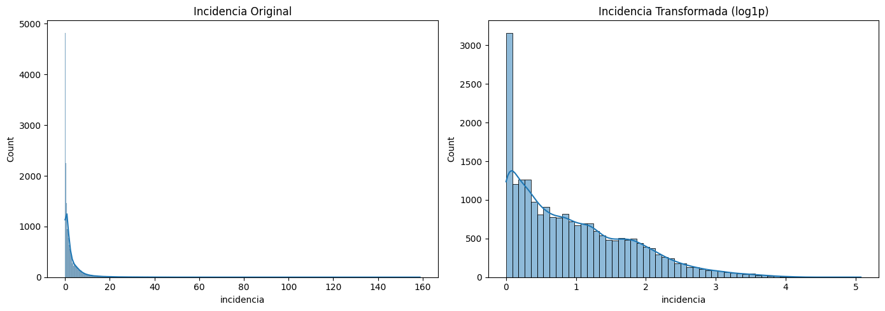
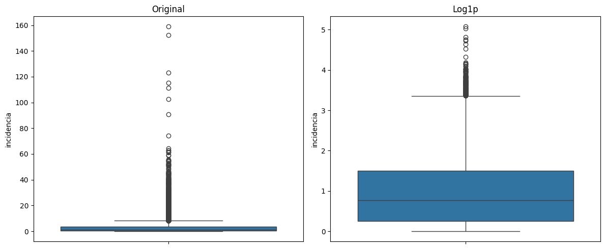
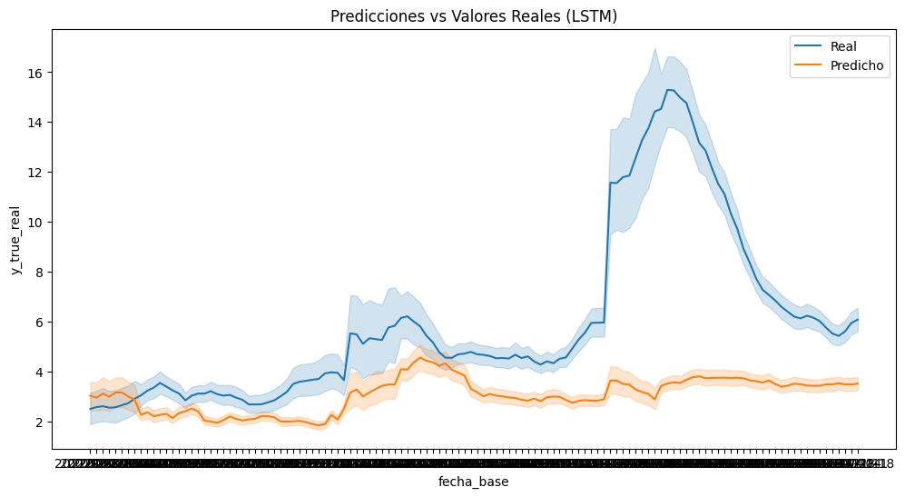
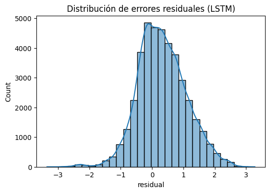
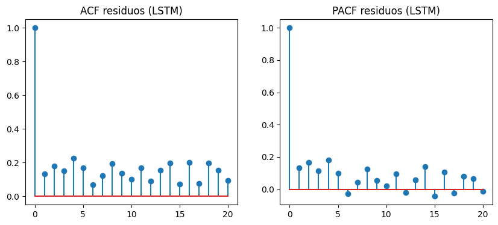
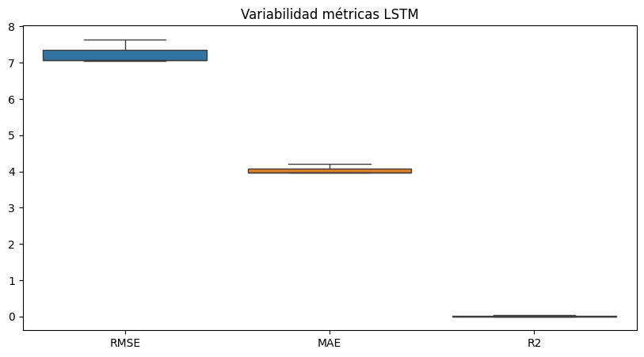
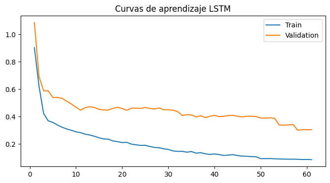
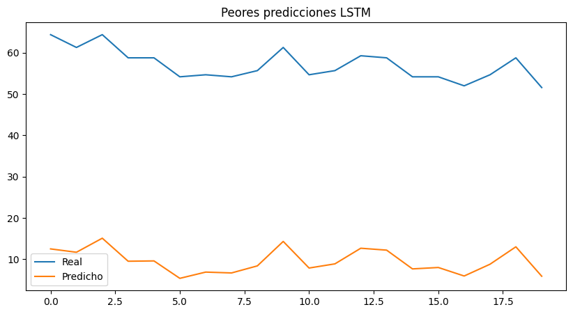

4. LSTM#
4.1. Librerias#
import os
import copy
import random
import optuna
import numpy as np
import pandas as pd
import matplotlib.pyplot as plt
import seaborn as sns
from scipy.stats import ttest_rel, wilcoxon
from statsmodels.stats.diagnostic import acorr_ljungbox
from statsmodels.tsa.stattools import acf, pacf
from sklearn.metrics import mean_squared_error, mean_absolute_error, r2_score
from sklearn.preprocessing import RobustScaler
from sklearn.metrics import (
mean_squared_error,
mean_absolute_error,
r2_score
)
import torch
import torch.nn as nn
import torch.nn.functional as F
from torch.utils.data import (
Dataset,
DataLoader
)
import geopandas as gpd
from libpysal.weights import Queen
import sys
import time
4.2. Configuración Reproducibilidad#
SEEDS = [42, 123, 2024]
DEVICE = torch.device(
"cuda" if torch.cuda.is_available()
else "cpu"
)
print("DEVICE:", DEVICE)
if torch.cuda.is_available():
print("GPU:", torch.cuda.get_device_name(0))
print("Python:", sys.version)
print("Torch:", torch.__version__)
print("Numpy:", np.__version__)
print("Pandas:", pd.__version__)
DEVICE: cuda
GPU: NVIDIA GeForce RTX 5050 Laptop GPU
Python: 3.10.20 (main, Mar 3 2026, 09:24:47) [GCC 13.3.0]
Torch: 2.11.0+cu130
Numpy: 2.2.6
Pandas: 2.3.3
El entorno de ejecución utiliza PyTorch 2.11 con soporte CUDA 13.0 y una GPU NVIDIA GeForce RTX 5050 Laptop, lo que permite acelerar significativamente el entrenamiento de modelos de deep learning. Además, la configuración de semillas múltiples y versiones recientes de librerías como NumPy y Pandas favorece la reproducibilidad y estabilidad experimental.
def set_seed(seed=42):
random.seed(seed)
np.random.seed(seed)
torch.manual_seed(seed)
torch.cuda.manual_seed(seed)
torch.cuda.manual_seed_all(seed)
torch.backends.cudnn.deterministic = True
torch.backends.cudnn.benchmark = False
torch.use_deterministic_algorithms(True)
os.environ["PYTHONHASHSEED"] = str(seed)
print(f"Seed fijada: {seed}")
def seed_worker(worker_id):
worker_seed = torch.initial_seed() % 2**32
np.random.seed(worker_seed)
random.seed(worker_seed)
g = torch.Generator()
Este código implementa una estrategia exhaustiva de reproducibilidad en experimentos con PyTorch, fijando semillas en random, numpy y torch, además de desactivar optimizaciones no deterministas de CUDA (como cudnn.benchmark) para garantizar resultados consistentes entre ejecuciones. Asimismo, se controla la aleatoriedad en los data loaders mediante seed_worker y un generador de PyTorch, asegurando coherencia en el muestreo paralelo de datos.
4.3. Carga de Datos & Preprocesamiento#
4.3.1. Carga de Datos#
df = pd.read_csv("/home/guirlessa/Dl_Proyecto_Dengue/Bases_Datos/df_full.csv")
df.head()
| departamento | fecha_inicio | ano | semana | casos | casos_mujeres | casos_hombres | casos_rural | casos_urbano | (0_5] | ... | precip_lag_12 | precip_lag_20 | temp_c | temp_lag_1 | temp_lag_2 | temp_lag_3 | temp_lag_4 | temp_lag_8 | temp_lag_12 | temp_lag_20 | |
|---|---|---|---|---|---|---|---|---|---|---|---|---|---|---|---|---|---|---|---|---|---|
| 0 | Amazonas | 2012-01-02 | 2012 | 1 | 0.0 | 0 | 0 | 0 | 0 | 0 | ... | 50.983546 | 39.108242 | 24.848668 | 24.890654 | 24.334752 | 24.545618 | 25.345678 | 25.278160 | 25.874930 | 24.364443 |
| 1 | Amazonas | 2012-01-09 | 2012 | 2 | 0.0 | 0 | 0 | 0 | 0 | 0 | ... | 61.818291 | 62.830250 | 24.729721 | 24.848668 | 24.890654 | 24.334752 | 24.545618 | 25.084141 | 25.495665 | 24.971798 |
| 2 | Amazonas | 2012-01-16 | 2012 | 3 | 0.0 | 0 | 0 | 0 | 0 | 0 | ... | 24.950393 | 42.988018 | 24.638674 | 24.729721 | 24.848668 | 24.890654 | 24.334752 | 25.751070 | 25.760539 | 25.304947 |
| 3 | Amazonas | 2012-01-23 | 2012 | 4 | 0.0 | 0 | 0 | 0 | 0 | 0 | ... | 88.169343 | 56.572467 | 25.164008 | 24.638674 | 24.729721 | 24.848668 | 24.890654 | 25.284157 | 25.842089 | 25.166142 |
| 4 | Amazonas | 2012-01-30 | 2012 | 5 | 0.0 | 0 | 0 | 0 | 0 | 0 | ... | 56.271440 | 74.893047 | 24.604644 | 25.164008 | 24.638674 | 24.729721 | 24.848668 | 25.345678 | 25.278160 | 25.312395 |
5 rows × 54 columns
print("El dataframe tiene {0} filas y {1} columnas.".format(df.shape[0], df.shape[1]))
El dataframe tiene 21664 filas y 54 columnas.
df.info()
<class 'pandas.core.frame.DataFrame'>
RangeIndex: 21664 entries, 0 to 21663
Data columns (total 54 columns):
# Column Non-Null Count Dtype
--- ------ -------------- -----
0 departamento 21664 non-null object
1 fecha_inicio 21664 non-null object
2 ano 21664 non-null int64
3 semana 21664 non-null int64
4 casos 21664 non-null float64
5 casos_mujeres 21664 non-null int64
6 casos_hombres 21664 non-null int64
7 casos_rural 21664 non-null int64
8 casos_urbano 21664 non-null int64
9 (0_5] 21664 non-null int64
10 (5_13] 21664 non-null int64
11 (13_26] 21664 non-null int64
12 (26_60] 21664 non-null int64
13 60_mas 21664 non-null int64
14 casos_Contributivo 21664 non-null int64
15 casos_No_asegurado 21664 non-null int64
16 casos_Subsidiado 21664 non-null int64
17 poblacion 21664 non-null float64
18 poblacion_rural 21664 non-null float64
19 poblacion_urbana 21664 non-null float64
20 prop_rural 21664 non-null float64
21 prop_urbana 21664 non-null float64
22 incidencia 21664 non-null float64
23 inc_lag_1 21664 non-null float64
24 inc_lag_2 21664 non-null float64
25 inc_lag_3 21664 non-null float64
26 inc_lag_4 21664 non-null float64
27 inc_lag_8 21664 non-null float64
28 inc_lag_12 21664 non-null float64
29 inc_lag_20 21664 non-null float64
30 humedad_relativa 21664 non-null float64
31 humedad_lag_1 21664 non-null float64
32 humedad_lag_2 21664 non-null float64
33 humedad_lag_3 21664 non-null float64
34 humedad_lag_4 21664 non-null float64
35 humedad_lag_8 21664 non-null float64
36 humedad_lag_12 21664 non-null float64
37 humedad_lag_20 21664 non-null float64
38 precipitacion 21664 non-null float64
39 precip_lag_1 21664 non-null float64
40 precip_lag_2 21664 non-null float64
41 precip_lag_3 21664 non-null float64
42 precip_lag_4 21664 non-null float64
43 precip_lag_8 21664 non-null float64
44 precip_lag_12 21664 non-null float64
45 precip_lag_20 21664 non-null float64
46 temp_c 21664 non-null float64
47 temp_lag_1 21664 non-null float64
48 temp_lag_2 21664 non-null float64
49 temp_lag_3 21664 non-null float64
50 temp_lag_4 21664 non-null float64
51 temp_lag_8 21664 non-null float64
52 temp_lag_12 21664 non-null float64
53 temp_lag_20 21664 non-null float64
dtypes: float64(38), int64(14), object(2)
memory usage: 8.9+ MB
Se observa que la variable fecha_inicio está tipificada como object, cuando en realidad debería corresponder al tipo datetime. Por ello, se procederá a realizar la conversión adecuada para garantizar un manejo correcto de fechas en las etapas posteriores de modelado.
df["fecha_inicio"] = pd.to_datetime(df["fecha_inicio"])
También se procede a organizar los registros del DataFrame según el departamento y la fecha de inicio, con el objetivo de asegurar una estructura temporal coherente que facilite el análisis y el posterior proceso de modelado.
df = df.sort_values(
["departamento", "fecha_inicio"]
).reset_index(drop=True)
4.3.2. Feature Enginering#
Con el fin de incorporar la estacionalidad anual de la enfermedad, se construyeron las variables cíclicas week_sin y week_cos a partir de la semana epidemiológica normalizada. Esta transformación permite representar la naturaleza periódica del calendario, preservando la continuidad entre el final y el inicio de cada año, y facilitando que los modelos capturen patrones estacionales recurrentes asociados a la transmisión del dengue.
weeks_per_year = df.groupby("ano")["semana"].transform("max")
df["week_norm"] = df["semana"] / weeks_per_year
df["week_sin"] = np.sin(2 * np.pi * df["week_norm"])
df["week_cos"] = np.cos(2 * np.pi * df["week_norm"])
Este conjunto de FEATURES define el espacio de variables utilizado para el modelado, combinando información temporal, climática y sociodemográfica. En particular, se incorporan múltiples rezagos (lags) de la incidencia y variables meteorológicas (temperatura, humedad y precipitación) para capturar dependencias temporales y efectos retardados, junto con variables estructurales como población y proporción rural. Adicionalmente, las componentes cíclicas week_sin y week_cos permiten modelar la estacionalidad semanal de forma continua, evitando discontinuidades propias de una codificación directa del tiempo.
FEATURES = [
"inc_lag_1",
"inc_lag_2",
"inc_lag_3",
"inc_lag_4",
"inc_lag_8",
"inc_lag_12",
"inc_lag_20",
"temp_lag_1",
"temp_lag_2",
"temp_lag_4",
"temp_lag_8",
"temp_lag_12",
"temp_lag_20",
"humedad_lag_1",
"humedad_lag_2",
"humedad_lag_4",
"humedad_lag_8",
"humedad_lag_12",
"humedad_lag_20",
"precip_lag_1",
"precip_lag_2",
"precip_lag_4",
"precip_lag_8",
"precip_lag_12",
"precip_lag_20",
"poblacion",
"prop_rural",
"week_sin",
"week_cos"
]
Asimismo, durante el análisis exploratorio de datos se observó que la variable de incidencia presentaba una distribución fuertemente asimétrica hacia la derecha, caracterizada por la presencia de valores extremos asociados a periodos epidémicos. Debido a ello, se consideró necesario aplicar una transformación logarítmica con el objetivo de reducir la asimetría, estabilizar la varianza y facilitar que los modelos capturen de manera más adecuada la estructura temporal y los patrones subyacentes de la incidencia del dengue.
df["incidencia_log"] = np.log1p(df["incidencia"])
TARGET = "incidencia_log"
Con el fin de evaluar el efecto de la transformación logarítmica, se compararon las distribuciones de la incidencia antes y después del preprocesamiento. La distribución original presentaba una marcada asimetría positiva y una alta concentración de valores extremos asociados a periodos epidémicos. Tras aplicar la transformación logarítmica (log1p), se observó una reducción significativa del sesgo y una distribución más equilibrada, lo que contribuye a estabilizar la varianza y facilita la identificación de patrones temporales por parte de los modelos predictivos.
fig, axes = plt.subplots(1, 2, figsize=(14, 5))
sns.histplot(
df["incidencia"],
kde=True,
ax=axes[0]
)
axes[0].set_title("Incidencia Original")
sns.histplot(
np.log1p(df["incidencia"]),
kde=True,
ax=axes[1]
)
axes[1].set_title("Incidencia Transformada (log1p)")
plt.tight_layout()
plt.show()
fig, axes = plt.subplots(1, 2, figsize=(12, 5))
sns.boxplot(y=df["incidencia"], ax=axes[0])
axes[0].set_title("Original")
sns.boxplot(y=np.log1p(df["incidencia"]), ax=axes[1])
axes[1].set_title("Log1p")
plt.tight_layout()
plt.show()


NUM_NODES = df["departamento"].nunique()
4.3.3. Normalización de los Datos#
Se plantea la función scale_data con el fin de aplicar una normalización robusta (RobustScaler) a los datos de entrenamiento y validación, para así preservar la estructura original de series temporales multivariadas. Para ello, primero reestructura los tensores a dos dimensiones para ajustar el escalador únicamente sobre el conjunto de entrenamiento, evitando data leakage, y luego transforma ambos conjuntos antes de devolverlos a su forma original.
def scale_data(X_train, X_val):
scaler = RobustScaler()
_, _, _, n_features = X_train.shape
X_train_2d = X_train.reshape(-1, n_features)
scaler.fit(X_train_2d)
X_train_scaled = scaler.transform(X_train_2d).reshape(X_train.shape)
X_val_scaled = scaler.transform(
X_val.reshape(-1, n_features)
).reshape(X_val.shape)
return X_train_scaled, X_val_scaled, scaler
4.4. Esquema de validación temporal#
Se implementa un esquema de validación cruzada temporal anidada (nested time series cross-validation), en el cual los datos se dividen respetando estrictamente el orden cronológico para evitar data leakage. En el nivel externo, se definen particiones de entrenamiento y prueba por año (2022–2024), simulando un escenario real de predicción futura; mientras que en el nivel interno, el conjunto de entrenamiento se subdivide nuevamente en conjuntos de entrenamiento y validación (2019–2021) para ajuste de hiperparámetros y selección de modelos. Este enfoque garantiza una evaluación más robusta y realista al emular la dinámica de predicción en series temporales.
def create_outer_folds(df, date_col="fecha_inicio"):
folds = []
outer_years = [2022, 2023, 2024]
for test_year in outer_years:
train_df = df[df[date_col].dt.year < test_year].copy()
test_df = df[df[date_col].dt.year == test_year].copy()
folds.append({
"test_year": test_year,
"train_df": train_df,
"test_df": test_df
})
return folds
outer_folds = create_outer_folds(df)
def create_inner_folds(train_df, val_years=[2019, 2020, 2021]):
inner_folds = []
for val_year in val_years:
inner_train = train_df[
train_df["fecha_inicio"].dt.year < val_year
].copy()
inner_val = train_df[
train_df["fecha_inicio"].dt.year == val_year
].copy()
inner_folds.append({
"val_year": val_year,
"inner_train": inner_train,
"inner_val": inner_val
})
return inner_folds
4.5. Construcción de Ventanas de Tiempo#
Esta función implementa la construcción del conjunto de datos supervisado para modelado espaciotemporal, mediante la transformación de datos tabulares en tensores estructurados compatibles con arquitecturas de aprendizaje profundo. En primer lugar, reorganiza las variables explicativas y la variable objetivo a través de tablas pivote indexadas por fecha y departamento, asegurando consistencia en la representación espacial. Posteriormente, se unifican las variables en un tensor multivariado y se genera una estructura de secuencias mediante una estrategia de ventanas deslizantes (sliding window), en la que se define explícitamente un historial de observación (window_size) y un horizonte de predicción (horizon). Finalmente, se preserva información auxiliar como las fechas de referencia y el orden de los departamentos, lo cual es fundamental para mantener la coherencia temporal y espacial del conjunto de datos.
def create_windows(
df,
features,
target,
window_size=12,
horizon=4
):
pivot_features = []
for feat in features:
pivot = df.pivot_table(
index="fecha_inicio",
columns="departamento",
values=feat
).sort_index()
pivot_features.append(pivot)
dept_order = pivot_features[0].columns.tolist()
pivot_features = [
pf[dept_order].values for pf in pivot_features
]
X_all = np.stack(pivot_features, axis=-1)
target_pivot = df.pivot_table(
index="fecha_inicio",
columns="departamento",
values=target
).sort_index()
target_pivot = target_pivot[dept_order]
y_all = target_pivot.values
dates = target_pivot.index.values
X, y, base_dates = [], [], []
total_steps = len(dates)
for i in range(total_steps - window_size - horizon + 1):
X.append(X_all[i : i + window_size])
y.append(y_all[i + window_size : i + window_size + horizon])
base_dates.append(dates[i + window_size - 1])
X = np.array(X, dtype=np.float32)
y = np.array(y, dtype=np.float32)
base_dates = np.array(base_dates)
return X, y, base_dates, dept_order
4.6. Funciones para el Modelado#
La clase EarlyStopping introduce un mecanismo de regularización basado en la detención anticipada del entrenamiento cuando la pérdida de validación deja de mejorar durante un número determinado de épocas (patience), lo cual ayuda a prevenir sobreajuste.
class EarlyStopping:
def __init__(self, patience=20):
self.patience = patience
self.best_loss = np.inf
self.counter = 0
self.stop = False
def step(self, val_loss):
if val_loss < self.best_loss:
self.best_loss = val_loss
self.counter = 0
else:
self.counter += 1
if self.counter >= self.patience:
self.stop = True
Por otro lado, train_one_epoch y validate_one_epoch definen los ciclos estándar de entrenamiento y evaluación por época, respectivamente: la primera realiza la optimización del modelo mediante retropropagación del error, actualización de parámetros y recorte de gradientes para estabilizar el aprendizaje, mientras que la segunda evalúa el desempeño del modelo en modo inferencia sin actualización de pesos, permitiendo monitorear su generalización.
def train_one_epoch(model, dataloader, criterion, optimizer, device):
model.train()
total_loss = 0
for X_batch, y_batch in dataloader:
X_batch = X_batch.to(device)
y_batch = y_batch.to(device)
optimizer.zero_grad()
pred = model(X_batch)
loss = criterion(pred, y_batch)
loss.backward()
nn.utils.clip_grad_norm_(model.parameters(), 1.0)
optimizer.step()
total_loss += loss.item()
return total_loss / len(dataloader)
def validate_one_epoch(model, dataloader, criterion, device):
model.eval()
total_loss = 0
with torch.no_grad():
for X_batch, y_batch in dataloader:
X_batch = X_batch.to(device)
y_batch = y_batch.to(device)
pred = model(X_batch)
loss = criterion(pred, y_batch)
total_loss += loss.item()
return total_loss / len(dataloader)
4.7. Arquitectura#
Esta sección define la arquitectura del modelo LSTM y la estructura del dataset utilizada para su entrenamiento en un contexto espaciotemporal. La clase Dataset convierte los datos preprocesados en tensores compatibles con PyTorch, facilitando su uso en el pipeline de entrenamiento. Por su parte, la clase LSTM implementa una red neuronal recurrente que recibe como entrada secuencias multivariadas organizadas por nodos espaciales y variables, las reestructura en una secuencia temporal plana y las procesa mediante capas LSTM. Finalmente, una red fully connected transforma la representación latente en predicciones multi-horizonte, generando salidas simultáneas para todos los nodos del sistema.
class Dataset(Dataset):
def __init__(self, X, y):
self.X = torch.tensor(X, dtype=torch.float32)
self.y = torch.tensor(y, dtype=torch.float32)
def __len__(self):
return len(self.X)
def __getitem__(self, idx):
return self.X[idx], self.y[idx]
class LSTM(nn.Module):
def __init__(
self,
num_nodes,
in_channels,
hidden_size=64,
num_layers=2,
horizon=4,
dropout=0.1
):
super().__init__()
self.num_nodes = num_nodes
self.horizon = horizon
self.hidden_size = hidden_size
self.lstm = nn.LSTM(
input_size=num_nodes * in_channels,
hidden_size=hidden_size,
num_layers=num_layers,
batch_first=True,
dropout=dropout if num_layers > 1 else 0.0
)
self.dropout = nn.Dropout(dropout)
self.fc = nn.Sequential(
nn.Linear(hidden_size, hidden_size),
nn.ReLU(),
nn.Linear(hidden_size, horizon * num_nodes)
)
def forward(self, x, adj=None):
batch, T, nodes, feats = x.shape
x = x.reshape(batch, T, nodes * feats)
out, _ = self.lstm(x)
last = out[:, -1, :]
last = self.dropout(last)
out = self.fc(last)
out = out.reshape(batch, self.horizon, self.num_nodes)
return out
4.8. Optimización de Hiperparametros#
Inicializamos el entorno experimental del pipeline de optimización y evaluación del modelo, definiendo estructuras globales para almacenar resultados de múltiples etapas del experimento (tuning, validación cruzada, entrenamiento y evaluación final).
ALL_OPTUNA_TRIALS = []
ALL_OPTUNA_FOLDS = []
ALL_RESIDUALS = []
ALL_INFERENCE_TIME = []
ALL_BEST_PARAMS = []
ALL_RESULTS = []
ALL_PREDICTIONS = []
ALL_LOSSES = []
TUNING_DF = df[df["fecha_inicio"].dt.year < 2022].copy()
INNER_FOLDS_TUNING = create_inner_folds(
TUNING_DF,
val_years=[2019, 2020, 2021]
)
Ahora, definimos objetivo de optimización para el ajuste de hiperparámetros mediante Optuna, evaluando distintas configuraciones del modelo LSTM. Para cada trial, se muestrean hiperparámetros como tamaño de ventana, tasa de aprendizaje, tamaño de lote, número de capas, unidades ocultas y dropout, y se evalúan mediante validación cruzada en los inner folds. En cada partición se entrena el modelo, se aplica early stopping y se calcula el RMSE sobre el conjunto de validación, retornando finalmente el error promedio como métrica a minimizar.
def objective(trial):
window_size = trial.suggest_categorical("window_size", [4, 8, 12, 16])
learning_rate = trial.suggest_float("learning_rate", 1e-4, 1e-2, log=True)
batch_size = trial.suggest_categorical("batch_size", [16, 32])
hidden_size = trial.suggest_categorical("hidden_size", [32, 64, 128])
num_layers = trial.suggest_int("num_layers", 1, 3)
dropout = trial.suggest_float("dropout", 0.0, 0.4, step=0.1)
rmse_folds = []
fold_errors = []
for fold_id, fold in enumerate(INNER_FOLDS_TUNING):
X_train, y_train, _, _ = create_windows(
fold["inner_train"], FEATURES, TARGET, window_size, 4
)
X_val, y_val, _, _ = create_windows(
fold["inner_val"], FEATURES, TARGET, window_size, 4
)
X_train_scaled, X_val_scaled, _ = scale_data(X_train, X_val)
train_loader = DataLoader(
Dataset(X_train_scaled, y_train),
batch_size=batch_size,
shuffle=False
)
val_loader = DataLoader(
Dataset(X_val_scaled, y_val),
batch_size=batch_size,
shuffle=False
)
model = LSTM(
num_nodes=NUM_NODES,
in_channels=len(FEATURES),
hidden_size=hidden_size,
num_layers=num_layers,
horizon=4,
dropout=dropout
).to(DEVICE)
optimizer = torch.optim.Adam(model.parameters(), lr=learning_rate)
criterion = nn.MSELoss()
early_stopping = EarlyStopping(patience=10)
for epoch in range(50):
train_one_epoch(model, train_loader, criterion, optimizer, DEVICE)
val_loss = validate_one_epoch(model, val_loader, criterion, DEVICE)
early_stopping.step(val_loss)
if early_stopping.stop:
break
# eval
model.eval()
preds, trues = [], []
with torch.no_grad():
for X_batch, y_batch in val_loader:
pred = model(X_batch.to(DEVICE))
preds.append(pred.cpu().numpy())
trues.append(y_batch.numpy())
preds = np.concatenate(preds)
trues = np.concatenate(trues)
rmse = np.sqrt(mean_squared_error(trues.flatten(), preds.flatten()))
rmse_folds.append(rmse)
fold_errors.append({
"trial": trial.number,
"seed": seed,
"fold": fold_id,
"rmse": rmse
})
rmse_mean = np.mean(rmse_folds)
return rmse_mean
4.9. Pipeline Train, Validation & Test#
Ahora se procede a ejecutar el ciclo completo de entrenamiento, optimización y evaluación del modelo LSTM bajo un esquema de validación cruzada temporal anidada. En este proceso, se realiza la búsqueda de hiperparámetros mediante Optuna para cada semilla, seguida del entrenamiento del modelo en los outer folds utilizando la mejor configuración obtenida. Finalmente, se evalúa el desempeño en el conjunto de prueba mediante métricas de error, registrando adicionalmente tiempos de entrenamiento e inferencia, así como predicciones y residuos para su análisis detallado posterior.
for seed in SEEDS:
print("\n")
print("="*100)
print(f"SEED {seed}")
print("="*100)
set_seed(seed)
sampler = optuna.samplers.TPESampler(seed=seed)
study = optuna.create_study(
direction="minimize",
sampler=sampler
)
study.optimize(objective, n_trials=30)
best_params = study.best_trial.params
print(f"\nMejores hiperparámetros para seed {seed}:")
print(best_params)
pd.DataFrame([{"seed": seed, **best_params}]).to_csv(
f"/home/guirlessa/Dl_Proyecto_Dengue/Modelos/LSTM/LSTM_best_params_seed_{seed}.csv",
index=False
)
ALL_BEST_PARAMS.append({"seed": seed, **best_params})
for outer_idx, outer_fold in enumerate(outer_folds):
print("\n")
print("="*100)
print(f"OUTER FOLD {outer_idx+1} | Test year: {outer_fold['test_year']}")
print("="*100)
outer_train_df = outer_fold["train_df"]
final_test_df = outer_fold["test_df"]
window_size = best_params["window_size"]
hidden_size = best_params["hidden_size"]
num_layers = best_params["num_layers"]
dropout = best_params["dropout"]
learning_rate = best_params["learning_rate"]
batch_size = best_params["batch_size"]
val_year = outer_train_df["fecha_inicio"].dt.year.max()
final_train_df = outer_train_df[
outer_train_df["fecha_inicio"].dt.year < val_year
]
final_val_df = outer_train_df[
outer_train_df["fecha_inicio"].dt.year == val_year
]
X_train, y_train, train_dates, dept_order = create_windows(
final_train_df, FEATURES, TARGET, window_size, 4
)
idx_to_dept = {i: d for i, d in enumerate(dept_order)}
dept_to_idx = {d: i for i, d in enumerate(dept_order)}
X_val, y_val, val_dates, _ = create_windows(
final_val_df, FEATURES, TARGET, window_size, 4
)
X_test, y_test, test_dates, _ = create_windows(
final_test_df, FEATURES, TARGET, window_size, 4
)
X_train_scaled, X_val_scaled, scaler = scale_data(X_train, X_val)
X_test_scaled = scaler.transform(
X_test.reshape(-1, X_test.shape[-1])
).reshape(X_test.shape)
train_dataset = Dataset(X_train_scaled, y_train)
val_dataset = Dataset(X_val_scaled, y_val)
test_dataset = Dataset(X_test_scaled, y_test)
train_loader = DataLoader(train_dataset, batch_size=batch_size, shuffle=False)
val_loader = DataLoader(val_dataset, batch_size=batch_size, shuffle=False)
test_loader = DataLoader(test_dataset, batch_size=batch_size, shuffle=False)
model = LSTM(
num_nodes=NUM_NODES,
in_channels=len(FEATURES),
hidden_size=hidden_size,
num_layers=num_layers,
horizon=4,
dropout=dropout
).to(DEVICE)
criterion = nn.MSELoss()
optimizer = torch.optim.Adam(
model.parameters(),
lr=learning_rate
)
scheduler = torch.optim.lr_scheduler.ReduceLROnPlateau(
optimizer, mode="min", factor=0.5, patience=10
)
early_stopping = EarlyStopping(patience=20)
best_model = None
best_loss = np.inf
total_train_time = 0.0
for epoch in range(300):
start_epoch = time.time()
train_loss = train_one_epoch(
model, train_loader, criterion, optimizer, DEVICE
)
val_loss = validate_one_epoch(
model, val_loader, criterion, DEVICE
)
scheduler.step(val_loss)
epoch_time = time.time() - start_epoch
total_train_time += epoch_time
print(
f"Epoch {epoch+1}"
f" | Train {train_loss:.4f}"
f" | Val {val_loss:.4f}"
f" | Time {epoch_time:.2f}s"
)
ALL_LOSSES.append({
"seed": seed,
"outer_fold": outer_idx + 1,
"test_year": outer_fold["test_year"],
"epoch": epoch + 1,
"train_loss": train_loss,
"val_loss": val_loss,
"epoch_time": epoch_time
})
if val_loss < best_loss:
best_loss = val_loss
best_model = copy.deepcopy(model)
early_stopping.step(val_loss)
if early_stopping.stop:
break
model = best_model
torch.save(
model.state_dict(),
f"/home/guirlessa/Dl_Proyecto_Dengue/Modelos/LSTM/"
f"lstm_seed_{seed}_outer_fold_{outer_idx+1}.pt"
)
model.eval()
start_inference = time.time()
predictions = []
targets = []
with torch.no_grad():
for X_batch, y_batch in test_loader:
X_batch = X_batch.to(DEVICE)
pred = model(X_batch.to(DEVICE))
predictions.append(pred.cpu().numpy())
targets.append(y_batch.numpy())
inference_time = time.time() - start_inference
predictions = np.concatenate(predictions)
targets = np.concatenate(targets)
mse = mean_squared_error(targets.flatten(), predictions.flatten())
rmse = np.sqrt(mse)
mae = mean_absolute_error(targets.flatten(), predictions.flatten())
r2 = r2_score(targets.flatten(), predictions.flatten())
ALL_RESULTS.append({
"seed": seed,
"outer_fold": outer_idx + 1,
"test_year": outer_fold["test_year"],
"mse": mse,
"rmse": rmse,
"mae": mae,
"r2": r2,
"train_time": total_train_time,
"inference_time": inference_time
})
ALL_INFERENCE_TIME.append({
"seed": seed,
"outer_fold": outer_idx + 1,
"test_year": outer_fold["test_year"],
"inference_time": inference_time,
"train_time": total_train_time
})
rows = []
for i in range(len(predictions)):
for h in range(4):
for node in range(NUM_NODES):
y_true = targets[i, h, node]
y_pred = predictions[i, h, node]
residual = y_true - y_pred
rows.append({
"seed": seed,
"outer_fold": outer_idx + 1,
"test_year": outer_fold["test_year"],
"departamento": idx_to_dept[node],
"fecha_base": test_dates[i],
"horizonte": h + 1,
"y_true_log": y_true,
"y_pred_log": y_pred,
"y_true_real": np.expm1(y_true),
"y_pred_real": np.expm1(y_pred),
"residual": residual,
"abs_error": abs(residual),
"sq_error": residual ** 2
})
ALL_RESIDUALS.append({
"seed": seed,
"outer_fold": outer_idx + 1,
"test_year": outer_fold["test_year"],
"departamento": idx_to_dept[node],
"fecha_base": test_dates[i],
"horizonte": h + 1,
"residual": residual
})
ALL_PREDICTIONS.append(pd.DataFrame(rows))
[I 2026-06-01 13:34:49,783] A new study created in memory with name: no-name-ed3bac65-25f4-4b96-b951-3c587e55607f
====================================================================================================
SEED 42
====================================================================================================
Seed fijada: 42
[I 2026-06-01 13:35:04,674] Trial 0 finished with value: 0.6980026211034188 and parameters: {'window_size': 8, 'learning_rate': 0.0002051338263087451, 'batch_size': 16, 'hidden_size': 32, 'num_layers': 1, 'dropout': 0.4}. Best is trial 0 with value: 0.6980026211034188.
[I 2026-06-01 13:35:14,830] Trial 1 finished with value: 0.6753492616054756 and parameters: {'window_size': 4, 'learning_rate': 0.0004059611610484307, 'batch_size': 16, 'hidden_size': 64, 'num_layers': 1, 'dropout': 0.1}. Best is trial 1 with value: 0.6753492616054756.
[I 2026-06-01 13:35:19,599] Trial 2 finished with value: 0.6916170885484471 and parameters: {'window_size': 8, 'learning_rate': 0.0015304852121831463, 'batch_size': 32, 'hidden_size': 128, 'num_layers': 3, 'dropout': 0.4}. Best is trial 1 with value: 0.6753492616054756.
[I 2026-06-01 13:35:34,417] Trial 3 finished with value: 0.6922186615875142 and parameters: {'window_size': 12, 'learning_rate': 0.00017541893487450815, 'batch_size': 16, 'hidden_size': 32, 'num_layers': 1, 'dropout': 0.2}. Best is trial 1 with value: 0.6753492616054756.
[I 2026-06-01 13:35:41,723] Trial 4 finished with value: 0.7131989380741137 and parameters: {'window_size': 12, 'learning_rate': 0.007568292060167618, 'batch_size': 16, 'hidden_size': 32, 'num_layers': 1, 'dropout': 0.1}. Best is trial 1 with value: 0.6753492616054756.
[I 2026-06-01 13:35:52,264] Trial 5 finished with value: 0.7003705640300556 and parameters: {'window_size': 12, 'learning_rate': 0.0003646439558980723, 'batch_size': 16, 'hidden_size': 128, 'num_layers': 3, 'dropout': 0.0}. Best is trial 1 with value: 0.6753492616054756.
[I 2026-06-01 13:35:56,399] Trial 6 finished with value: 0.7157329634451618 and parameters: {'window_size': 8, 'learning_rate': 0.0034877126245459306, 'batch_size': 32, 'hidden_size': 64, 'num_layers': 1, 'dropout': 0.0}. Best is trial 1 with value: 0.6753492616054756.
[I 2026-06-01 13:36:08,250] Trial 7 finished with value: 0.69987336396441 and parameters: {'window_size': 12, 'learning_rate': 0.0059487468132197715, 'batch_size': 16, 'hidden_size': 64, 'num_layers': 3, 'dropout': 0.2}. Best is trial 1 with value: 0.6753492616054756.
[I 2026-06-01 13:36:20,437] Trial 8 finished with value: 0.6931216863608248 and parameters: {'window_size': 4, 'learning_rate': 0.0001155735281626988, 'batch_size': 16, 'hidden_size': 64, 'num_layers': 2, 'dropout': 0.30000000000000004}. Best is trial 1 with value: 0.6753492616054756.
[I 2026-06-01 13:36:28,268] Trial 9 finished with value: 0.7143823038576494 and parameters: {'window_size': 12, 'learning_rate': 0.007234279845665418, 'batch_size': 16, 'hidden_size': 32, 'num_layers': 3, 'dropout': 0.2}. Best is trial 1 with value: 0.6753492616054756.
[I 2026-06-01 13:36:35,579] Trial 10 finished with value: 0.6619747888556269 and parameters: {'window_size': 4, 'learning_rate': 0.0005451806350972793, 'batch_size': 32, 'hidden_size': 64, 'num_layers': 2, 'dropout': 0.1}. Best is trial 10 with value: 0.6619747888556269.
[I 2026-06-01 13:36:46,288] Trial 11 finished with value: 0.6717474057948146 and parameters: {'window_size': 4, 'learning_rate': 0.0006094046787183485, 'batch_size': 32, 'hidden_size': 64, 'num_layers': 2, 'dropout': 0.1}. Best is trial 10 with value: 0.6619747888556269.
[I 2026-06-01 13:36:52,265] Trial 12 finished with value: 0.6700276688596872 and parameters: {'window_size': 4, 'learning_rate': 0.0008964416390251238, 'batch_size': 32, 'hidden_size': 64, 'num_layers': 2, 'dropout': 0.1}. Best is trial 10 with value: 0.6619747888556269.
[I 2026-06-01 13:37:00,159] Trial 13 finished with value: 0.655437454780092 and parameters: {'window_size': 16, 'learning_rate': 0.0012707276506775471, 'batch_size': 32, 'hidden_size': 64, 'num_layers': 2, 'dropout': 0.1}. Best is trial 13 with value: 0.655437454780092.
[I 2026-06-01 13:37:05,158] Trial 14 finished with value: 0.6924484079280502 and parameters: {'window_size': 16, 'learning_rate': 0.0018766975138415063, 'batch_size': 32, 'hidden_size': 64, 'num_layers': 2, 'dropout': 0.0}. Best is trial 13 with value: 0.655437454780092.
[I 2026-06-01 13:37:15,273] Trial 15 finished with value: 0.6709382755121087 and parameters: {'window_size': 16, 'learning_rate': 0.0016676163812944795, 'batch_size': 32, 'hidden_size': 64, 'num_layers': 2, 'dropout': 0.2}. Best is trial 13 with value: 0.655437454780092.
[I 2026-06-01 13:37:21,295] Trial 16 finished with value: 0.6700870796810351 and parameters: {'window_size': 16, 'learning_rate': 0.0008429530559678024, 'batch_size': 32, 'hidden_size': 128, 'num_layers': 2, 'dropout': 0.30000000000000004}. Best is trial 13 with value: 0.655437454780092.
[I 2026-06-01 13:37:27,880] Trial 17 finished with value: 0.6625027082283519 and parameters: {'window_size': 16, 'learning_rate': 0.002937824050513123, 'batch_size': 32, 'hidden_size': 64, 'num_layers': 2, 'dropout': 0.1}. Best is trial 13 with value: 0.655437454780092.
[I 2026-06-01 13:37:33,211] Trial 18 finished with value: 0.682034968645768 and parameters: {'window_size': 4, 'learning_rate': 0.00042767075481378055, 'batch_size': 32, 'hidden_size': 64, 'num_layers': 3, 'dropout': 0.30000000000000004}. Best is trial 13 with value: 0.655437454780092.
[I 2026-06-01 13:37:39,507] Trial 19 finished with value: 0.7140912362093159 and parameters: {'window_size': 16, 'learning_rate': 0.0011970478705763813, 'batch_size': 32, 'hidden_size': 128, 'num_layers': 2, 'dropout': 0.0}. Best is trial 13 with value: 0.655437454780092.
[I 2026-06-01 13:37:43,024] Trial 20 finished with value: 0.6771903513421736 and parameters: {'window_size': 4, 'learning_rate': 0.002843999420573445, 'batch_size': 32, 'hidden_size': 64, 'num_layers': 2, 'dropout': 0.1}. Best is trial 13 with value: 0.655437454780092.
[I 2026-06-01 13:37:52,337] Trial 21 finished with value: 0.681241566507905 and parameters: {'window_size': 16, 'learning_rate': 0.002879546092923264, 'batch_size': 32, 'hidden_size': 64, 'num_layers': 2, 'dropout': 0.1}. Best is trial 13 with value: 0.655437454780092.
[I 2026-06-01 13:37:57,477] Trial 22 finished with value: 0.6895069559254691 and parameters: {'window_size': 16, 'learning_rate': 0.003906029543583403, 'batch_size': 32, 'hidden_size': 64, 'num_layers': 2, 'dropout': 0.1}. Best is trial 13 with value: 0.655437454780092.
[I 2026-06-01 13:38:02,534] Trial 23 finished with value: 0.6720353596976688 and parameters: {'window_size': 16, 'learning_rate': 0.0006021507245222882, 'batch_size': 32, 'hidden_size': 64, 'num_layers': 2, 'dropout': 0.0}. Best is trial 13 with value: 0.655437454780092.
[I 2026-06-01 13:38:08,896] Trial 24 finished with value: 0.6705198626401634 and parameters: {'window_size': 16, 'learning_rate': 0.002096106115861111, 'batch_size': 32, 'hidden_size': 64, 'num_layers': 2, 'dropout': 0.1}. Best is trial 13 with value: 0.655437454780092.
[I 2026-06-01 13:38:12,818] Trial 25 finished with value: 0.691733029959478 and parameters: {'window_size': 16, 'learning_rate': 0.004503918782133934, 'batch_size': 32, 'hidden_size': 64, 'num_layers': 2, 'dropout': 0.2}. Best is trial 13 with value: 0.655437454780092.
[I 2026-06-01 13:38:17,385] Trial 26 finished with value: 0.6576903333555543 and parameters: {'window_size': 16, 'learning_rate': 0.001216147966541517, 'batch_size': 32, 'hidden_size': 64, 'num_layers': 1, 'dropout': 0.1}. Best is trial 13 with value: 0.655437454780092.
[I 2026-06-01 13:38:21,383] Trial 27 finished with value: 0.6671314174572256 and parameters: {'window_size': 4, 'learning_rate': 0.0011388718106611006, 'batch_size': 32, 'hidden_size': 64, 'num_layers': 1, 'dropout': 0.0}. Best is trial 13 with value: 0.655437454780092.
[I 2026-06-01 13:38:30,071] Trial 28 finished with value: 0.6442625657451843 and parameters: {'window_size': 8, 'learning_rate': 0.0006439776873611326, 'batch_size': 32, 'hidden_size': 128, 'num_layers': 1, 'dropout': 0.2}. Best is trial 28 with value: 0.6442625657451843.
[I 2026-06-01 13:38:35,139] Trial 29 finished with value: 0.6861524735233817 and parameters: {'window_size': 8, 'learning_rate': 0.0002719221073266985, 'batch_size': 32, 'hidden_size': 128, 'num_layers': 1, 'dropout': 0.30000000000000004}. Best is trial 28 with value: 0.6442625657451843.
Mejores hiperparámetros para seed 42:
{'window_size': 8, 'learning_rate': 0.0006439776873611326, 'batch_size': 32, 'hidden_size': 128, 'num_layers': 1, 'dropout': 0.2}
====================================================================================================
OUTER FOLD 1 | Test year: 2022
====================================================================================================
Epoch 1 | Train 0.9460 | Val 0.5891 | Time 0.05s
Epoch 2 | Train 0.4987 | Val 0.4799 | Time 0.06s
Epoch 3 | Train 0.3233 | Val 0.4643 | Time 0.05s
Epoch 4 | Train 0.2928 | Val 0.4487 | Time 0.05s
Epoch 5 | Train 0.2743 | Val 0.4228 | Time 0.05s
Epoch 6 | Train 0.2571 | Val 0.4092 | Time 0.05s
Epoch 7 | Train 0.2404 | Val 0.3877 | Time 0.06s
Epoch 8 | Train 0.2331 | Val 0.3707 | Time 0.05s
Epoch 9 | Train 0.2149 | Val 0.3888 | Time 0.07s
Epoch 10 | Train 0.2049 | Val 0.3774 | Time 0.06s
Epoch 11 | Train 0.2230 | Val 0.3804 | Time 0.06s
Epoch 12 | Train 0.1952 | Val 0.3557 | Time 0.06s
Epoch 13 | Train 0.1872 | Val 0.3840 | Time 0.07s
Epoch 14 | Train 0.1759 | Val 0.3476 | Time 0.06s
Epoch 15 | Train 0.1614 | Val 0.3543 | Time 0.05s
Epoch 16 | Train 0.1490 | Val 0.3679 | Time 0.05s
Epoch 17 | Train 0.1480 | Val 0.3562 | Time 0.05s
Epoch 18 | Train 0.1379 | Val 0.3545 | Time 0.05s
Epoch 19 | Train 0.1321 | Val 0.3762 | Time 0.05s
Epoch 20 | Train 0.1311 | Val 0.3369 | Time 0.05s
Epoch 21 | Train 0.1371 | Val 0.3668 | Time 0.05s
Epoch 22 | Train 0.1238 | Val 0.3416 | Time 0.06s
Epoch 23 | Train 0.1184 | Val 0.3743 | Time 0.06s
Epoch 24 | Train 0.1166 | Val 0.3507 | Time 0.06s
Epoch 25 | Train 0.1100 | Val 0.3626 | Time 0.05s
Epoch 26 | Train 0.1074 | Val 0.3614 | Time 0.06s
Epoch 27 | Train 0.1085 | Val 0.3531 | Time 0.05s
Epoch 28 | Train 0.1065 | Val 0.3546 | Time 0.05s
Epoch 29 | Train 0.1012 | Val 0.3518 | Time 0.06s
Epoch 30 | Train 0.1049 | Val 0.3434 | Time 0.06s
Epoch 31 | Train 0.1021 | Val 0.3624 | Time 0.06s
Epoch 32 | Train 0.0943 | Val 0.3400 | Time 0.06s
Epoch 33 | Train 0.0916 | Val 0.3400 | Time 0.05s
Epoch 34 | Train 0.0911 | Val 0.3439 | Time 0.05s
Epoch 35 | Train 0.0897 | Val 0.3468 | Time 0.05s
Epoch 36 | Train 0.0891 | Val 0.3467 | Time 0.05s
Epoch 37 | Train 0.0883 | Val 0.3383 | Time 0.06s
Epoch 38 | Train 0.0874 | Val 0.3560 | Time 0.05s
Epoch 39 | Train 0.0884 | Val 0.3517 | Time 0.05s
Epoch 40 | Train 0.0868 | Val 0.3513 | Time 0.05s
====================================================================================================
OUTER FOLD 2 | Test year: 2023
====================================================================================================
/home/guirlessa/tf_gpu/lib/python3.10/site-packages/torch/nn/modules/rnn.py:1169: UserWarning: RNN module weights are not part of single contiguous chunk of memory. This means they need to be compacted at every call, possibly greatly increasing memory usage. To compact weights again call flatten_parameters(). (Triggered internally at /pytorch/aten/src/ATen/native/cudnn/RNN.cpp:1479.)
result = _VF.lstm(
Epoch 1 | Train 0.9428 | Val 0.9311 | Time 0.05s
Epoch 2 | Train 0.5271 | Val 0.5843 | Time 0.08s
Epoch 3 | Train 0.3553 | Val 0.5060 | Time 0.08s
Epoch 4 | Train 0.3103 | Val 0.5024 | Time 0.07s
Epoch 5 | Train 0.2924 | Val 0.4654 | Time 0.06s
Epoch 6 | Train 0.2728 | Val 0.4441 | Time 0.05s
Epoch 7 | Train 0.2535 | Val 0.4254 | Time 0.05s
Epoch 8 | Train 0.2359 | Val 0.4217 | Time 0.05s
Epoch 9 | Train 0.2280 | Val 0.4353 | Time 0.06s
Epoch 10 | Train 0.2389 | Val 0.4127 | Time 0.05s
Epoch 11 | Train 0.2107 | Val 0.4009 | Time 0.07s
Epoch 12 | Train 0.2087 | Val 0.4352 | Time 0.06s
Epoch 13 | Train 0.1974 | Val 0.4092 | Time 0.06s
Epoch 14 | Train 0.1744 | Val 0.3866 | Time 0.05s
Epoch 15 | Train 0.1533 | Val 0.3953 | Time 0.06s
Epoch 16 | Train 0.1476 | Val 0.3985 | Time 0.06s
Epoch 17 | Train 0.1402 | Val 0.3831 | Time 0.06s
Epoch 18 | Train 0.1296 | Val 0.3791 | Time 0.06s
Epoch 19 | Train 0.1266 | Val 0.4002 | Time 0.05s
Epoch 20 | Train 0.1232 | Val 0.3790 | Time 0.08s
Epoch 21 | Train 0.1173 | Val 0.3757 | Time 0.06s
Epoch 22 | Train 0.1196 | Val 0.3993 | Time 0.06s
Epoch 23 | Train 0.1144 | Val 0.3853 | Time 0.06s
Epoch 24 | Train 0.1088 | Val 0.3699 | Time 0.06s
Epoch 25 | Train 0.1130 | Val 0.3899 | Time 0.06s
Epoch 26 | Train 0.1096 | Val 0.3886 | Time 0.08s
Epoch 27 | Train 0.1062 | Val 0.3746 | Time 0.06s
Epoch 28 | Train 0.1118 | Val 0.4049 | Time 0.07s
Epoch 29 | Train 0.1089 | Val 0.3794 | Time 0.05s
Epoch 30 | Train 0.1124 | Val 0.3982 | Time 0.06s
Epoch 31 | Train 0.1182 | Val 0.3963 | Time 0.10s
Epoch 32 | Train 0.1074 | Val 0.3756 | Time 0.09s
Epoch 33 | Train 0.1033 | Val 0.3959 | Time 0.09s
Epoch 34 | Train 0.1052 | Val 0.3847 | Time 0.08s
Epoch 35 | Train 0.1002 | Val 0.3891 | Time 0.06s
Epoch 36 | Train 0.0912 | Val 0.3757 | Time 0.07s
Epoch 37 | Train 0.0882 | Val 0.3795 | Time 0.09s
Epoch 38 | Train 0.0870 | Val 0.3781 | Time 0.09s
Epoch 39 | Train 0.0864 | Val 0.3815 | Time 0.10s
Epoch 40 | Train 0.0866 | Val 0.3792 | Time 0.07s
Epoch 41 | Train 0.0861 | Val 0.3799 | Time 0.06s
Epoch 42 | Train 0.0851 | Val 0.3810 | Time 0.06s
Epoch 43 | Train 0.0843 | Val 0.3734 | Time 0.07s
Epoch 44 | Train 0.0844 | Val 0.3856 | Time 0.06s
====================================================================================================
OUTER FOLD 3 | Test year: 2024
====================================================================================================
/home/guirlessa/tf_gpu/lib/python3.10/site-packages/torch/nn/modules/rnn.py:1169: UserWarning: RNN module weights are not part of single contiguous chunk of memory. This means they need to be compacted at every call, possibly greatly increasing memory usage. To compact weights again call flatten_parameters(). (Triggered internally at /pytorch/aten/src/ATen/native/cudnn/RNN.cpp:1479.)
result = _VF.lstm(
Epoch 1 | Train 0.9809 | Val 1.5291 | Time 0.07s
Epoch 2 | Train 0.5377 | Val 0.8482 | Time 0.07s
Epoch 3 | Train 0.3761 | Val 0.6412 | Time 0.07s
Epoch 4 | Train 0.3250 | Val 0.5480 | Time 0.07s
Epoch 5 | Train 0.3071 | Val 0.5719 | Time 0.07s
Epoch 6 | Train 0.2811 | Val 0.5814 | Time 0.07s
Epoch 7 | Train 0.2624 | Val 0.5386 | Time 0.07s
Epoch 8 | Train 0.2394 | Val 0.5049 | Time 0.07s
Epoch 9 | Train 0.2475 | Val 0.6400 | Time 0.09s
Epoch 10 | Train 0.2218 | Val 0.5628 | Time 0.08s
Epoch 11 | Train 0.2079 | Val 0.5148 | Time 0.10s
Epoch 12 | Train 0.2162 | Val 0.6034 | Time 0.07s
Epoch 13 | Train 0.1912 | Val 0.5584 | Time 0.07s
Epoch 14 | Train 0.1777 | Val 0.4841 | Time 0.07s
Epoch 15 | Train 0.1776 | Val 0.5270 | Time 0.06s
Epoch 16 | Train 0.1556 | Val 0.5368 | Time 0.07s
Epoch 17 | Train 0.1547 | Val 0.4567 | Time 0.07s
Epoch 18 | Train 0.1603 | Val 0.5124 | Time 0.07s
Epoch 19 | Train 0.1395 | Val 0.4939 | Time 0.08s
Epoch 20 | Train 0.1358 | Val 0.4291 | Time 0.07s
Epoch 21 | Train 0.1368 | Val 0.5020 | Time 0.06s
Epoch 22 | Train 0.1245 | Val 0.5091 | Time 0.06s
Epoch 23 | Train 0.1226 | Val 0.4343 | Time 0.06s
Epoch 24 | Train 0.1196 | Val 0.4490 | Time 0.06s
Epoch 25 | Train 0.1106 | Val 0.4855 | Time 0.05s
Epoch 26 | Train 0.1128 | Val 0.4374 | Time 0.06s
Epoch 27 | Train 0.1083 | Val 0.4341 | Time 0.05s
Epoch 28 | Train 0.1065 | Val 0.4966 | Time 0.07s
Epoch 29 | Train 0.1152 | Val 0.4617 | Time 0.07s
Epoch 30 | Train 0.1064 | Val 0.4303 | Time 0.06s
Epoch 31 | Train 0.1220 | Val 0.5089 | Time 0.06s
Epoch 32 | Train 0.1096 | Val 0.4534 | Time 0.06s
Epoch 33 | Train 0.0965 | Val 0.4776 | Time 0.06s
Epoch 34 | Train 0.0942 | Val 0.4472 | Time 0.05s
Epoch 35 | Train 0.0937 | Val 0.4589 | Time 0.06s
Epoch 36 | Train 0.0924 | Val 0.4544 | Time 0.06s
Epoch 37 | Train 0.0915 | Val 0.4659 | Time 0.06s
Epoch 38 | Train 0.0900 | Val 0.4662 | Time 0.06s
Epoch 39 | Train 0.0895 | Val 0.4613 | Time 0.06s
/home/guirlessa/tf_gpu/lib/python3.10/site-packages/torch/nn/modules/rnn.py:1169: UserWarning: RNN module weights are not part of single contiguous chunk of memory. This means they need to be compacted at every call, possibly greatly increasing memory usage. To compact weights again call flatten_parameters(). (Triggered internally at /pytorch/aten/src/ATen/native/cudnn/RNN.cpp:1479.)
result = _VF.lstm(
[I 2026-06-01 13:38:44,268] A new study created in memory with name: no-name-ef5f6a7e-8183-4bbf-ad9c-2b7ea35654a6
Epoch 40 | Train 0.0883 | Val 0.4590 | Time 0.06s
====================================================================================================
SEED 123
====================================================================================================
Seed fijada: 123
[I 2026-06-01 13:38:50,808] Trial 0 finished with value: 0.6772686186245624 and parameters: {'window_size': 4, 'learning_rate': 0.0027475015086811214, 'batch_size': 32, 'hidden_size': 32, 'num_layers': 2, 'dropout': 0.30000000000000004}. Best is trial 0 with value: 0.6772686186245624.
[I 2026-06-01 13:38:56,889] Trial 1 finished with value: 0.7031007799731815 and parameters: {'window_size': 16, 'learning_rate': 0.00023173063990755244, 'batch_size': 32, 'hidden_size': 128, 'num_layers': 3, 'dropout': 0.30000000000000004}. Best is trial 0 with value: 0.6772686186245624.
[I 2026-06-01 13:39:09,080] Trial 2 finished with value: 0.688584498885536 and parameters: {'window_size': 4, 'learning_rate': 0.0003867480144966058, 'batch_size': 16, 'hidden_size': 128, 'num_layers': 2, 'dropout': 0.1}. Best is trial 0 with value: 0.6772686186245624.
[I 2026-06-01 13:39:15,363] Trial 3 finished with value: 0.6629375849262754 and parameters: {'window_size': 12, 'learning_rate': 0.0017697254791971563, 'batch_size': 32, 'hidden_size': 64, 'num_layers': 2, 'dropout': 0.4}. Best is trial 3 with value: 0.6629375849262754.
[I 2026-06-01 13:39:24,500] Trial 4 finished with value: 0.7025056228827683 and parameters: {'window_size': 16, 'learning_rate': 0.001607386279172614, 'batch_size': 16, 'hidden_size': 128, 'num_layers': 3, 'dropout': 0.2}. Best is trial 3 with value: 0.6629375849262754.
[I 2026-06-01 13:39:28,809] Trial 5 finished with value: 0.6585776831546902 and parameters: {'window_size': 16, 'learning_rate': 0.004838211787792581, 'batch_size': 32, 'hidden_size': 128, 'num_layers': 1, 'dropout': 0.4}. Best is trial 5 with value: 0.6585776831546902.
[I 2026-06-01 13:39:39,372] Trial 6 finished with value: 0.6912528072581217 and parameters: {'window_size': 8, 'learning_rate': 0.0012988840529683243, 'batch_size': 16, 'hidden_size': 32, 'num_layers': 2, 'dropout': 0.1}. Best is trial 5 with value: 0.6585776831546902.
[I 2026-06-01 13:39:44,488] Trial 7 finished with value: 0.7183574459830625 and parameters: {'window_size': 4, 'learning_rate': 0.000406945402927034, 'batch_size': 32, 'hidden_size': 32, 'num_layers': 2, 'dropout': 0.30000000000000004}. Best is trial 5 with value: 0.6585776831546902.
[I 2026-06-01 13:39:51,053] Trial 8 finished with value: 0.7380118105082693 and parameters: {'window_size': 8, 'learning_rate': 0.0010623223250113558, 'batch_size': 16, 'hidden_size': 128, 'num_layers': 3, 'dropout': 0.2}. Best is trial 5 with value: 0.6585776831546902.
[I 2026-06-01 13:40:05,619] Trial 9 finished with value: 0.6825625450027051 and parameters: {'window_size': 4, 'learning_rate': 0.00021986882646940107, 'batch_size': 16, 'hidden_size': 64, 'num_layers': 1, 'dropout': 0.4}. Best is trial 5 with value: 0.6585776831546902.
[I 2026-06-01 13:40:14,331] Trial 10 finished with value: 0.7073162880490287 and parameters: {'window_size': 16, 'learning_rate': 0.009864454806005426, 'batch_size': 32, 'hidden_size': 128, 'num_layers': 1, 'dropout': 0.0}. Best is trial 5 with value: 0.6585776831546902.
[I 2026-06-01 13:40:19,481] Trial 11 finished with value: 0.6564668546569066 and parameters: {'window_size': 12, 'learning_rate': 0.004813545579978294, 'batch_size': 32, 'hidden_size': 64, 'num_layers': 1, 'dropout': 0.4}. Best is trial 11 with value: 0.6564668546569066.
[I 2026-06-01 13:40:25,381] Trial 12 finished with value: 0.6417011472628904 and parameters: {'window_size': 12, 'learning_rate': 0.005875481688256521, 'batch_size': 32, 'hidden_size': 64, 'num_layers': 1, 'dropout': 0.4}. Best is trial 12 with value: 0.6417011472628904.
[I 2026-06-01 13:40:28,848] Trial 13 finished with value: 0.6939874328211144 and parameters: {'window_size': 12, 'learning_rate': 0.009870718423116317, 'batch_size': 32, 'hidden_size': 64, 'num_layers': 1, 'dropout': 0.4}. Best is trial 12 with value: 0.6417011472628904.
[I 2026-06-01 13:40:33,646] Trial 14 finished with value: 0.6550790400459438 and parameters: {'window_size': 12, 'learning_rate': 0.004584648431411643, 'batch_size': 32, 'hidden_size': 64, 'num_layers': 1, 'dropout': 0.30000000000000004}. Best is trial 12 with value: 0.6417011472628904.
[I 2026-06-01 13:40:37,707] Trial 15 finished with value: 0.7005455605689356 and parameters: {'window_size': 12, 'learning_rate': 0.0038576034689028387, 'batch_size': 32, 'hidden_size': 64, 'num_layers': 1, 'dropout': 0.30000000000000004}. Best is trial 12 with value: 0.6417011472628904.
[I 2026-06-01 13:40:42,692] Trial 16 finished with value: 0.6592203601282405 and parameters: {'window_size': 12, 'learning_rate': 0.006476036517737068, 'batch_size': 32, 'hidden_size': 64, 'num_layers': 1, 'dropout': 0.30000000000000004}. Best is trial 12 with value: 0.6417011472628904.
[I 2026-06-01 13:40:53,734] Trial 17 finished with value: 0.7341268956213116 and parameters: {'window_size': 12, 'learning_rate': 0.00010311261995883501, 'batch_size': 32, 'hidden_size': 64, 'num_layers': 1, 'dropout': 0.2}. Best is trial 12 with value: 0.6417011472628904.
[I 2026-06-01 13:40:58,477] Trial 18 finished with value: 0.6691164129815995 and parameters: {'window_size': 12, 'learning_rate': 0.002352903494836788, 'batch_size': 32, 'hidden_size': 64, 'num_layers': 1, 'dropout': 0.30000000000000004}. Best is trial 12 with value: 0.6417011472628904.
[I 2026-06-01 13:41:05,388] Trial 19 finished with value: 0.7396843227563288 and parameters: {'window_size': 12, 'learning_rate': 0.0006692249898751628, 'batch_size': 32, 'hidden_size': 64, 'num_layers': 2, 'dropout': 0.1}. Best is trial 12 with value: 0.6417011472628904.
[I 2026-06-01 13:41:13,168] Trial 20 finished with value: 0.6784985411268939 and parameters: {'window_size': 8, 'learning_rate': 0.002978250569746065, 'batch_size': 32, 'hidden_size': 64, 'num_layers': 2, 'dropout': 0.2}. Best is trial 12 with value: 0.6417011472628904.
[I 2026-06-01 13:41:18,172] Trial 21 finished with value: 0.7177944751125741 and parameters: {'window_size': 12, 'learning_rate': 0.005907132352944991, 'batch_size': 32, 'hidden_size': 64, 'num_layers': 1, 'dropout': 0.4}. Best is trial 12 with value: 0.6417011472628904.
[I 2026-06-01 13:41:25,947] Trial 22 finished with value: 0.6409957638976284 and parameters: {'window_size': 12, 'learning_rate': 0.004044227014342651, 'batch_size': 32, 'hidden_size': 64, 'num_layers': 1, 'dropout': 0.4}. Best is trial 22 with value: 0.6409957638976284.
[I 2026-06-01 13:41:33,519] Trial 23 finished with value: 0.6814535686277466 and parameters: {'window_size': 12, 'learning_rate': 0.007907666424757397, 'batch_size': 32, 'hidden_size': 64, 'num_layers': 1, 'dropout': 0.4}. Best is trial 22 with value: 0.6409957638976284.
[I 2026-06-01 13:41:38,234] Trial 24 finished with value: 0.647446733053532 and parameters: {'window_size': 12, 'learning_rate': 0.0037674488396612577, 'batch_size': 32, 'hidden_size': 64, 'num_layers': 1, 'dropout': 0.30000000000000004}. Best is trial 22 with value: 0.6409957638976284.
[I 2026-06-01 13:41:44,228] Trial 25 finished with value: 0.6517724759435418 and parameters: {'window_size': 12, 'learning_rate': 0.0032616039862446294, 'batch_size': 32, 'hidden_size': 32, 'num_layers': 1, 'dropout': 0.4}. Best is trial 22 with value: 0.6409957638976284.
[I 2026-06-01 13:41:52,622] Trial 26 finished with value: 0.6718394102157439 and parameters: {'window_size': 12, 'learning_rate': 0.002013003467018184, 'batch_size': 16, 'hidden_size': 64, 'num_layers': 1, 'dropout': 0.30000000000000004}. Best is trial 22 with value: 0.6409957638976284.
[I 2026-06-01 13:42:00,332] Trial 27 finished with value: 0.7216875804115562 and parameters: {'window_size': 12, 'learning_rate': 0.0064834772286940295, 'batch_size': 32, 'hidden_size': 64, 'num_layers': 2, 'dropout': 0.4}. Best is trial 22 with value: 0.6409957638976284.
[I 2026-06-01 13:42:05,892] Trial 28 finished with value: 0.6498001433262482 and parameters: {'window_size': 8, 'learning_rate': 0.0007616282935689597, 'batch_size': 32, 'hidden_size': 64, 'num_layers': 1, 'dropout': 0.30000000000000004}. Best is trial 22 with value: 0.6409957638976284.
[I 2026-06-01 13:42:12,834] Trial 29 finished with value: 0.687413986706991 and parameters: {'window_size': 4, 'learning_rate': 0.0028329892219431867, 'batch_size': 32, 'hidden_size': 32, 'num_layers': 2, 'dropout': 0.30000000000000004}. Best is trial 22 with value: 0.6409957638976284.
Mejores hiperparámetros para seed 123:
{'window_size': 12, 'learning_rate': 0.004044227014342651, 'batch_size': 32, 'hidden_size': 64, 'num_layers': 1, 'dropout': 0.4}
====================================================================================================
OUTER FOLD 1 | Test year: 2022
====================================================================================================
Epoch 1 | Train 0.8514 | Val 0.5247 | Time 0.06s
Epoch 2 | Train 0.3976 | Val 0.5330 | Time 0.06s
Epoch 3 | Train 0.3547 | Val 0.4700 | Time 0.06s
Epoch 4 | Train 0.3328 | Val 0.4816 | Time 0.06s
Epoch 5 | Train 0.3352 | Val 0.4569 | Time 0.06s
Epoch 6 | Train 0.3028 | Val 0.4475 | Time 0.05s
Epoch 7 | Train 0.2890 | Val 0.4257 | Time 0.05s
Epoch 8 | Train 0.2978 | Val 0.4196 | Time 0.05s
Epoch 9 | Train 0.2700 | Val 0.3866 | Time 0.08s
Epoch 10 | Train 0.2541 | Val 0.4067 | Time 0.07s
Epoch 11 | Train 0.2434 | Val 0.4005 | Time 0.07s
Epoch 12 | Train 0.2644 | Val 0.3727 | Time 0.06s
Epoch 13 | Train 0.2336 | Val 0.3963 | Time 0.07s
Epoch 14 | Train 0.2432 | Val 0.3614 | Time 0.07s
Epoch 15 | Train 0.2398 | Val 0.3929 | Time 0.06s
Epoch 16 | Train 0.2546 | Val 0.3772 | Time 0.08s
Epoch 17 | Train 0.2353 | Val 0.3864 | Time 0.10s
Epoch 18 | Train 0.2206 | Val 0.3800 | Time 0.09s
Epoch 19 | Train 0.2224 | Val 0.3531 | Time 0.09s
Epoch 20 | Train 0.2116 | Val 0.4071 | Time 0.09s
Epoch 21 | Train 0.2038 | Val 0.3837 | Time 0.08s
Epoch 22 | Train 0.2127 | Val 0.3870 | Time 0.06s
Epoch 23 | Train 0.1951 | Val 0.3695 | Time 0.06s
Epoch 24 | Train 0.1936 | Val 0.4032 | Time 0.11s
Epoch 25 | Train 0.1935 | Val 0.3663 | Time 0.10s
Epoch 26 | Train 0.1976 | Val 0.3821 | Time 0.07s
Epoch 27 | Train 0.1760 | Val 0.3820 | Time 0.06s
Epoch 28 | Train 0.1742 | Val 0.3898 | Time 0.06s
Epoch 29 | Train 0.1730 | Val 0.3804 | Time 0.06s
Epoch 30 | Train 0.1670 | Val 0.3521 | Time 0.06s
Epoch 31 | Train 0.1612 | Val 0.3542 | Time 0.06s
Epoch 32 | Train 0.1594 | Val 0.3476 | Time 0.06s
Epoch 33 | Train 0.1512 | Val 0.3621 | Time 0.07s
Epoch 34 | Train 0.1629 | Val 0.3518 | Time 0.08s
Epoch 35 | Train 0.1546 | Val 0.3531 | Time 0.07s
Epoch 36 | Train 0.1520 | Val 0.3601 | Time 0.06s
Epoch 37 | Train 0.1611 | Val 0.3583 | Time 0.07s
Epoch 38 | Train 0.1507 | Val 0.3634 | Time 0.07s
Epoch 39 | Train 0.1471 | Val 0.3770 | Time 0.07s
Epoch 40 | Train 0.1626 | Val 0.3616 | Time 0.07s
Epoch 41 | Train 0.1585 | Val 0.3410 | Time 0.08s
Epoch 42 | Train 0.1598 | Val 0.3642 | Time 0.07s
Epoch 43 | Train 0.1860 | Val 0.3471 | Time 0.07s
Epoch 44 | Train 0.2019 | Val 0.3730 | Time 0.06s
Epoch 45 | Train 0.1606 | Val 0.3395 | Time 0.07s
Epoch 46 | Train 0.1492 | Val 0.3573 | Time 0.07s
Epoch 47 | Train 0.1405 | Val 0.3482 | Time 0.07s
Epoch 48 | Train 0.1349 | Val 0.3472 | Time 0.06s
Epoch 49 | Train 0.1290 | Val 0.3455 | Time 0.06s
Epoch 50 | Train 0.1290 | Val 0.3566 | Time 0.07s
Epoch 51 | Train 0.1304 | Val 0.3475 | Time 0.07s
Epoch 52 | Train 0.1330 | Val 0.3487 | Time 0.06s
Epoch 53 | Train 0.1288 | Val 0.3619 | Time 0.06s
Epoch 54 | Train 0.1287 | Val 0.3533 | Time 0.05s
Epoch 55 | Train 0.1277 | Val 0.3478 | Time 0.05s
Epoch 56 | Train 0.1266 | Val 0.3616 | Time 0.06s
Epoch 57 | Train 0.1224 | Val 0.3493 | Time 0.05s
Epoch 58 | Train 0.1201 | Val 0.3584 | Time 0.05s
Epoch 59 | Train 0.1214 | Val 0.3545 | Time 0.05s
Epoch 60 | Train 0.1171 | Val 0.3592 | Time 0.08s
Epoch 61 | Train 0.1189 | Val 0.3607 | Time 0.07s
Epoch 62 | Train 0.1154 | Val 0.3543 | Time 0.06s
Epoch 63 | Train 0.1181 | Val 0.3566 | Time 0.09s
Epoch 64 | Train 0.1178 | Val 0.3485 | Time 0.09s
Epoch 65 | Train 0.1171 | Val 0.3440 | Time 0.07s
====================================================================================================
OUTER FOLD 2 | Test year: 2023
====================================================================================================
/home/guirlessa/tf_gpu/lib/python3.10/site-packages/torch/nn/modules/rnn.py:1169: UserWarning: RNN module weights are not part of single contiguous chunk of memory. This means they need to be compacted at every call, possibly greatly increasing memory usage. To compact weights again call flatten_parameters(). (Triggered internally at /pytorch/aten/src/ATen/native/cudnn/RNN.cpp:1479.)
result = _VF.lstm(
Epoch 1 | Train 0.8040 | Val 0.8164 | Time 0.06s
Epoch 2 | Train 0.4604 | Val 0.5769 | Time 0.07s
Epoch 3 | Train 0.3622 | Val 0.5261 | Time 0.08s
Epoch 4 | Train 0.3549 | Val 0.4916 | Time 0.07s
Epoch 5 | Train 0.3514 | Val 0.5545 | Time 0.07s
Epoch 6 | Train 0.3221 | Val 0.4979 | Time 0.07s
Epoch 7 | Train 0.3150 | Val 0.4577 | Time 0.06s
Epoch 8 | Train 0.2964 | Val 0.4611 | Time 0.07s
Epoch 9 | Train 0.3133 | Val 0.4629 | Time 0.07s
Epoch 10 | Train 0.2814 | Val 0.4538 | Time 0.07s
Epoch 11 | Train 0.2820 | Val 0.4370 | Time 0.07s
Epoch 12 | Train 0.2689 | Val 0.4036 | Time 0.07s
Epoch 13 | Train 0.2625 | Val 0.3976 | Time 0.07s
Epoch 14 | Train 0.2498 | Val 0.4464 | Time 0.08s
Epoch 15 | Train 0.2450 | Val 0.4056 | Time 0.09s
Epoch 16 | Train 0.2275 | Val 0.3954 | Time 0.07s
Epoch 17 | Train 0.2435 | Val 0.3998 | Time 0.07s
Epoch 18 | Train 0.2281 | Val 0.4928 | Time 0.09s
Epoch 19 | Train 0.2416 | Val 0.4122 | Time 0.09s
Epoch 20 | Train 0.2366 | Val 0.3891 | Time 0.10s
Epoch 21 | Train 0.2069 | Val 0.4105 | Time 0.09s
Epoch 22 | Train 0.2122 | Val 0.4161 | Time 0.08s
Epoch 23 | Train 0.1923 | Val 0.4252 | Time 0.09s
Epoch 24 | Train 0.2020 | Val 0.4003 | Time 0.08s
Epoch 25 | Train 0.2102 | Val 0.4511 | Time 0.07s
Epoch 26 | Train 0.2033 | Val 0.4163 | Time 0.06s
Epoch 27 | Train 0.2462 | Val 0.4720 | Time 0.07s
Epoch 28 | Train 0.2290 | Val 0.5092 | Time 0.07s
Epoch 29 | Train 0.2003 | Val 0.4118 | Time 0.07s
Epoch 30 | Train 0.2114 | Val 0.4700 | Time 0.06s
Epoch 31 | Train 0.2098 | Val 0.4581 | Time 0.07s
Epoch 32 | Train 0.1830 | Val 0.4162 | Time 0.06s
Epoch 33 | Train 0.1592 | Val 0.4086 | Time 0.06s
Epoch 34 | Train 0.1593 | Val 0.4204 | Time 0.07s
Epoch 35 | Train 0.1539 | Val 0.4052 | Time 0.07s
Epoch 36 | Train 0.1577 | Val 0.3986 | Time 0.07s
Epoch 37 | Train 0.1547 | Val 0.4112 | Time 0.06s
Epoch 38 | Train 0.1533 | Val 0.4130 | Time 0.06s
Epoch 39 | Train 0.1519 | Val 0.4049 | Time 0.06s
Epoch 40 | Train 0.1489 | Val 0.4016 | Time 0.07s
====================================================================================================
OUTER FOLD 3 | Test year: 2024
====================================================================================================
/home/guirlessa/tf_gpu/lib/python3.10/site-packages/torch/nn/modules/rnn.py:1169: UserWarning: RNN module weights are not part of single contiguous chunk of memory. This means they need to be compacted at every call, possibly greatly increasing memory usage. To compact weights again call flatten_parameters(). (Triggered internally at /pytorch/aten/src/ATen/native/cudnn/RNN.cpp:1479.)
result = _VF.lstm(
Epoch 1 | Train 0.7843 | Val 0.9228 | Time 0.08s
Epoch 2 | Train 0.4255 | Val 0.6466 | Time 0.07s
Epoch 3 | Train 0.3860 | Val 0.6640 | Time 0.12s
Epoch 4 | Train 0.3738 | Val 0.5796 | Time 0.12s
Epoch 5 | Train 0.3745 | Val 0.5230 | Time 0.10s
Epoch 6 | Train 0.3708 | Val 0.5830 | Time 0.09s
Epoch 7 | Train 0.3332 | Val 0.6450 | Time 0.09s
Epoch 8 | Train 0.3205 | Val 0.7127 | Time 0.08s
Epoch 9 | Train 0.3083 | Val 0.6157 | Time 0.08s
Epoch 10 | Train 0.2938 | Val 0.5269 | Time 0.07s
Epoch 11 | Train 0.3187 | Val 0.6608 | Time 0.07s
Epoch 12 | Train 0.2776 | Val 0.7099 | Time 0.07s
Epoch 13 | Train 0.2995 | Val 0.6270 | Time 0.07s
Epoch 14 | Train 0.2720 | Val 0.5301 | Time 0.07s
Epoch 15 | Train 0.2860 | Val 0.6654 | Time 0.07s
Epoch 16 | Train 0.2579 | Val 0.6748 | Time 0.07s
Epoch 17 | Train 0.2469 | Val 0.5435 | Time 0.08s
Epoch 18 | Train 0.2206 | Val 0.5731 | Time 0.07s
Epoch 19 | Train 0.2095 | Val 0.5695 | Time 0.07s
Epoch 20 | Train 0.2048 | Val 0.5824 | Time 0.07s
Epoch 21 | Train 0.1994 | Val 0.5941 | Time 0.07s
Epoch 22 | Train 0.2010 | Val 0.5852 | Time 0.06s
Epoch 23 | Train 0.1983 | Val 0.6097 | Time 0.06s
Epoch 24 | Train 0.1993 | Val 0.6077 | Time 0.06s
Epoch 25 | Train 0.1885 | Val 0.5985 | Time 0.06s
/home/guirlessa/tf_gpu/lib/python3.10/site-packages/torch/nn/modules/rnn.py:1169: UserWarning: RNN module weights are not part of single contiguous chunk of memory. This means they need to be compacted at every call, possibly greatly increasing memory usage. To compact weights again call flatten_parameters(). (Triggered internally at /pytorch/aten/src/ATen/native/cudnn/RNN.cpp:1479.)
result = _VF.lstm(
[I 2026-06-01 13:42:23,776] A new study created in memory with name: no-name-c7031253-5f78-46e7-8104-3a214e176db8
====================================================================================================
SEED 2024
====================================================================================================
Seed fijada: 2024
[I 2026-06-01 13:42:35,866] Trial 0 finished with value: 0.7127815709778046 and parameters: {'window_size': 8, 'learning_rate': 0.00025706201341357387, 'batch_size': 32, 'hidden_size': 32, 'num_layers': 1, 'dropout': 0.30000000000000004}. Best is trial 0 with value: 0.7127815709778046.
[I 2026-06-01 13:42:45,977] Trial 1 finished with value: 0.7058306862366784 and parameters: {'window_size': 8, 'learning_rate': 0.0007912297893994032, 'batch_size': 32, 'hidden_size': 32, 'num_layers': 3, 'dropout': 0.1}. Best is trial 1 with value: 0.7058306862366784.
[I 2026-06-01 13:42:57,748] Trial 2 finished with value: 0.6757977199928141 and parameters: {'window_size': 12, 'learning_rate': 0.0005826600761873635, 'batch_size': 16, 'hidden_size': 32, 'num_layers': 3, 'dropout': 0.1}. Best is trial 2 with value: 0.6757977199928141.
[I 2026-06-01 13:43:08,507] Trial 3 finished with value: 0.6740542501612629 and parameters: {'window_size': 4, 'learning_rate': 0.0006921437121549417, 'batch_size': 32, 'hidden_size': 64, 'num_layers': 2, 'dropout': 0.4}. Best is trial 3 with value: 0.6740542501612629.
[I 2026-06-01 13:43:16,836] Trial 4 finished with value: 0.6716552770292704 and parameters: {'window_size': 8, 'learning_rate': 0.0011371317166913556, 'batch_size': 16, 'hidden_size': 64, 'num_layers': 1, 'dropout': 0.4}. Best is trial 4 with value: 0.6716552770292704.
[I 2026-06-01 13:43:24,677] Trial 5 finished with value: 0.6479118565020036 and parameters: {'window_size': 16, 'learning_rate': 0.002254848165197095, 'batch_size': 32, 'hidden_size': 64, 'num_layers': 2, 'dropout': 0.4}. Best is trial 5 with value: 0.6479118565020036.
[I 2026-06-01 13:43:35,116] Trial 6 finished with value: 0.6889846935085092 and parameters: {'window_size': 16, 'learning_rate': 0.00027698482671292466, 'batch_size': 32, 'hidden_size': 32, 'num_layers': 3, 'dropout': 0.0}. Best is trial 5 with value: 0.6479118565020036.
[I 2026-06-01 13:43:39,593] Trial 7 finished with value: 0.7027583657644607 and parameters: {'window_size': 4, 'learning_rate': 0.002939617314228401, 'batch_size': 32, 'hidden_size': 64, 'num_layers': 1, 'dropout': 0.30000000000000004}. Best is trial 5 with value: 0.6479118565020036.
[I 2026-06-01 13:43:51,729] Trial 8 finished with value: 0.6581259106074183 and parameters: {'window_size': 4, 'learning_rate': 0.0011573512488480852, 'batch_size': 16, 'hidden_size': 32, 'num_layers': 2, 'dropout': 0.2}. Best is trial 5 with value: 0.6479118565020036.
[I 2026-06-01 13:43:55,292] Trial 9 finished with value: 0.6862921657212535 and parameters: {'window_size': 16, 'learning_rate': 0.00757619316801864, 'batch_size': 32, 'hidden_size': 32, 'num_layers': 1, 'dropout': 0.0}. Best is trial 5 with value: 0.6479118565020036.
[I 2026-06-01 13:44:04,154] Trial 10 finished with value: 0.6970762750112746 and parameters: {'window_size': 16, 'learning_rate': 0.0036027618348831417, 'batch_size': 16, 'hidden_size': 128, 'num_layers': 2, 'dropout': 0.30000000000000004}. Best is trial 5 with value: 0.6479118565020036.
[I 2026-06-01 13:44:11,885] Trial 11 finished with value: 0.7264139848361043 and parameters: {'window_size': 4, 'learning_rate': 0.0019564407985472308, 'batch_size': 16, 'hidden_size': 128, 'num_layers': 2, 'dropout': 0.2}. Best is trial 5 with value: 0.6479118565020036.
[I 2026-06-01 13:44:22,495] Trial 12 finished with value: 0.7151964331001844 and parameters: {'window_size': 12, 'learning_rate': 0.008537013971488294, 'batch_size': 16, 'hidden_size': 64, 'num_layers': 2, 'dropout': 0.2}. Best is trial 5 with value: 0.6479118565020036.
[I 2026-06-01 13:44:33,114] Trial 13 finished with value: 0.6779105201756696 and parameters: {'window_size': 16, 'learning_rate': 0.0015321635670932875, 'batch_size': 16, 'hidden_size': 64, 'num_layers': 2, 'dropout': 0.2}. Best is trial 5 with value: 0.6479118565020036.
[I 2026-06-01 13:44:39,314] Trial 14 finished with value: 0.6958141811574251 and parameters: {'window_size': 4, 'learning_rate': 0.0001389583508566695, 'batch_size': 32, 'hidden_size': 128, 'num_layers': 2, 'dropout': 0.1}. Best is trial 5 with value: 0.6479118565020036.
[I 2026-06-01 13:44:45,632] Trial 15 finished with value: 0.7379266310377344 and parameters: {'window_size': 16, 'learning_rate': 0.004169256164109585, 'batch_size': 16, 'hidden_size': 32, 'num_layers': 2, 'dropout': 0.4}. Best is trial 5 with value: 0.6479118565020036.
[I 2026-06-01 13:44:53,520] Trial 16 finished with value: 0.6887698950582978 and parameters: {'window_size': 4, 'learning_rate': 0.0003857912953440815, 'batch_size': 32, 'hidden_size': 64, 'num_layers': 3, 'dropout': 0.30000000000000004}. Best is trial 5 with value: 0.6479118565020036.
[I 2026-06-01 13:45:03,052] Trial 17 finished with value: 0.686851585365949 and parameters: {'window_size': 12, 'learning_rate': 0.0019083090117473851, 'batch_size': 16, 'hidden_size': 32, 'num_layers': 2, 'dropout': 0.1}. Best is trial 5 with value: 0.6479118565020036.
[I 2026-06-01 13:45:07,280] Trial 18 finished with value: 0.6991567487200462 and parameters: {'window_size': 4, 'learning_rate': 0.005699413584275722, 'batch_size': 32, 'hidden_size': 64, 'num_layers': 3, 'dropout': 0.30000000000000004}. Best is trial 5 with value: 0.6479118565020036.
[I 2026-06-01 13:45:14,809] Trial 19 finished with value: 0.6931755962519799 and parameters: {'window_size': 16, 'learning_rate': 0.0011781227417080567, 'batch_size': 16, 'hidden_size': 128, 'num_layers': 1, 'dropout': 0.2}. Best is trial 5 with value: 0.6479118565020036.
[I 2026-06-01 13:45:21,594] Trial 20 finished with value: 0.6679896272948826 and parameters: {'window_size': 4, 'learning_rate': 0.0021780837943009153, 'batch_size': 32, 'hidden_size': 64, 'num_layers': 2, 'dropout': 0.4}. Best is trial 5 with value: 0.6479118565020036.
[I 2026-06-01 13:45:30,689] Trial 21 finished with value: 0.6880898523593785 and parameters: {'window_size': 4, 'learning_rate': 0.0024063123418538008, 'batch_size': 32, 'hidden_size': 64, 'num_layers': 2, 'dropout': 0.4}. Best is trial 5 with value: 0.6479118565020036.
[I 2026-06-01 13:45:38,442] Trial 22 finished with value: 0.6656296046893811 and parameters: {'window_size': 4, 'learning_rate': 0.0013095822886895017, 'batch_size': 32, 'hidden_size': 64, 'num_layers': 2, 'dropout': 0.4}. Best is trial 5 with value: 0.6479118565020036.
[I 2026-06-01 13:45:44,168] Trial 23 finished with value: 0.6712573941769123 and parameters: {'window_size': 4, 'learning_rate': 0.0013041420195415928, 'batch_size': 32, 'hidden_size': 64, 'num_layers': 2, 'dropout': 0.30000000000000004}. Best is trial 5 with value: 0.6479118565020036.
[I 2026-06-01 13:45:51,234] Trial 24 finished with value: 0.6684315621817234 and parameters: {'window_size': 4, 'learning_rate': 0.0005372974539453803, 'batch_size': 32, 'hidden_size': 64, 'num_layers': 2, 'dropout': 0.4}. Best is trial 5 with value: 0.6479118565020036.
[I 2026-06-01 13:45:57,483] Trial 25 finished with value: 0.6800208004617715 and parameters: {'window_size': 16, 'learning_rate': 0.0009168483975479546, 'batch_size': 32, 'hidden_size': 32, 'num_layers': 2, 'dropout': 0.30000000000000004}. Best is trial 5 with value: 0.6479118565020036.
[I 2026-06-01 13:46:08,390] Trial 26 finished with value: 0.6988431280309767 and parameters: {'window_size': 8, 'learning_rate': 0.004835840106123283, 'batch_size': 16, 'hidden_size': 64, 'num_layers': 1, 'dropout': 0.2}. Best is trial 5 with value: 0.6479118565020036.
[I 2026-06-01 13:46:13,504] Trial 27 finished with value: 0.7026922325968755 and parameters: {'window_size': 12, 'learning_rate': 0.001588756826692015, 'batch_size': 32, 'hidden_size': 64, 'num_layers': 3, 'dropout': 0.4}. Best is trial 5 with value: 0.6479118565020036.
[I 2026-06-01 13:46:20,362] Trial 28 finished with value: 0.7138814793293867 and parameters: {'window_size': 4, 'learning_rate': 0.0029979378589082744, 'batch_size': 16, 'hidden_size': 128, 'num_layers': 2, 'dropout': 0.2}. Best is trial 5 with value: 0.6479118565020036.
[I 2026-06-01 13:46:27,667] Trial 29 finished with value: 0.6839197261065211 and parameters: {'window_size': 8, 'learning_rate': 0.00037719400239173673, 'batch_size': 32, 'hidden_size': 32, 'num_layers': 1, 'dropout': 0.30000000000000004}. Best is trial 5 with value: 0.6479118565020036.
Mejores hiperparámetros para seed 2024:
{'window_size': 16, 'learning_rate': 0.002254848165197095, 'batch_size': 32, 'hidden_size': 64, 'num_layers': 2, 'dropout': 0.4}
====================================================================================================
OUTER FOLD 1 | Test year: 2022
====================================================================================================
Epoch 1 | Train 0.8941 | Val 0.5092 | Time 0.06s
Epoch 2 | Train 0.4709 | Val 0.5289 | Time 0.07s
Epoch 3 | Train 0.3716 | Val 0.5679 | Time 0.07s
Epoch 4 | Train 0.3664 | Val 0.4988 | Time 0.06s
Epoch 5 | Train 0.3487 | Val 0.4843 | Time 0.06s
Epoch 6 | Train 0.3228 | Val 0.5516 | Time 0.06s
Epoch 7 | Train 0.3188 | Val 0.5300 | Time 0.06s
Epoch 8 | Train 0.3238 | Val 0.4811 | Time 0.06s
Epoch 9 | Train 0.3126 | Val 0.5266 | Time 0.07s
Epoch 10 | Train 0.3097 | Val 0.5325 | Time 0.06s
Epoch 11 | Train 0.3187 | Val 0.4946 | Time 0.06s
Epoch 12 | Train 0.3027 | Val 0.4995 | Time 0.06s
Epoch 13 | Train 0.2934 | Val 0.4991 | Time 0.06s
Epoch 14 | Train 0.2887 | Val 0.5208 | Time 0.06s
Epoch 15 | Train 0.2910 | Val 0.5269 | Time 0.06s
Epoch 16 | Train 0.2818 | Val 0.5069 | Time 0.06s
Epoch 17 | Train 0.2878 | Val 0.5065 | Time 0.07s
Epoch 18 | Train 0.2772 | Val 0.5314 | Time 0.06s
Epoch 19 | Train 0.3172 | Val 0.4701 | Time 0.06s
Epoch 20 | Train 0.2903 | Val 0.4985 | Time 0.06s
Epoch 21 | Train 0.2875 | Val 0.4557 | Time 0.07s
Epoch 22 | Train 0.2711 | Val 0.4265 | Time 0.07s
Epoch 23 | Train 0.2544 | Val 0.4715 | Time 0.07s
Epoch 24 | Train 0.2461 | Val 0.4281 | Time 0.06s
Epoch 25 | Train 0.2502 | Val 0.4269 | Time 0.06s
Epoch 26 | Train 0.2318 | Val 0.4175 | Time 0.07s
Epoch 27 | Train 0.2385 | Val 0.4290 | Time 0.07s
Epoch 28 | Train 0.2162 | Val 0.4251 | Time 0.07s
Epoch 29 | Train 0.2299 | Val 0.4706 | Time 0.06s
Epoch 30 | Train 0.2228 | Val 0.4035 | Time 0.06s
Epoch 31 | Train 0.2061 | Val 0.4180 | Time 0.06s
Epoch 32 | Train 0.1966 | Val 0.4723 | Time 0.06s
Epoch 33 | Train 0.2304 | Val 0.3827 | Time 0.06s
Epoch 34 | Train 0.2069 | Val 0.4941 | Time 0.09s
Epoch 35 | Train 0.2056 | Val 0.4413 | Time 0.09s
Epoch 36 | Train 0.1902 | Val 0.3951 | Time 0.07s
Epoch 37 | Train 0.1868 | Val 0.4039 | Time 0.07s
Epoch 38 | Train 0.1770 | Val 0.3843 | Time 0.09s
Epoch 39 | Train 0.1678 | Val 0.4064 | Time 0.11s
Epoch 40 | Train 0.1656 | Val 0.4182 | Time 0.08s
Epoch 41 | Train 0.1787 | Val 0.4691 | Time 0.08s
Epoch 42 | Train 0.1583 | Val 0.3995 | Time 0.08s
Epoch 43 | Train 0.1602 | Val 0.4056 | Time 0.08s
Epoch 44 | Train 0.1476 | Val 0.4020 | Time 0.08s
Epoch 45 | Train 0.1448 | Val 0.3975 | Time 0.08s
Epoch 46 | Train 0.1392 | Val 0.4014 | Time 0.08s
Epoch 47 | Train 0.1388 | Val 0.4004 | Time 0.08s
Epoch 48 | Train 0.1366 | Val 0.4022 | Time 0.11s
Epoch 49 | Train 0.1355 | Val 0.4030 | Time 0.07s
Epoch 50 | Train 0.1355 | Val 0.4036 | Time 0.08s
Epoch 51 | Train 0.1345 | Val 0.4094 | Time 0.07s
Epoch 52 | Train 0.1355 | Val 0.4108 | Time 0.08s
Epoch 53 | Train 0.1349 | Val 0.4093 | Time 0.07s
====================================================================================================
OUTER FOLD 2 | Test year: 2023
====================================================================================================
/home/guirlessa/tf_gpu/lib/python3.10/site-packages/torch/nn/modules/rnn.py:1169: UserWarning: RNN module weights are not part of single contiguous chunk of memory. This means they need to be compacted at every call, possibly greatly increasing memory usage. To compact weights again call flatten_parameters(). (Triggered internally at /pytorch/aten/src/ATen/native/cudnn/RNN.cpp:1479.)
result = _VF.lstm(
Epoch 1 | Train 0.8793 | Val 0.6432 | Time 0.08s
Epoch 2 | Train 0.5126 | Val 0.7581 | Time 0.08s
Epoch 3 | Train 0.4170 | Val 0.5639 | Time 0.07s
Epoch 4 | Train 0.3505 | Val 0.5214 | Time 0.07s
Epoch 5 | Train 0.3451 | Val 0.5367 | Time 0.08s
Epoch 6 | Train 0.3323 | Val 0.5453 | Time 0.07s
Epoch 7 | Train 0.3285 | Val 0.5380 | Time 0.08s
Epoch 8 | Train 0.3225 | Val 0.5421 | Time 0.08s
Epoch 9 | Train 0.3276 | Val 0.5203 | Time 0.08s
Epoch 10 | Train 0.3237 | Val 0.5745 | Time 0.08s
Epoch 11 | Train 0.3133 | Val 0.5626 | Time 0.08s
Epoch 12 | Train 0.3193 | Val 0.5194 | Time 0.07s
Epoch 13 | Train 0.3101 | Val 0.4627 | Time 0.07s
Epoch 14 | Train 0.3287 | Val 0.5446 | Time 0.07s
Epoch 15 | Train 0.2916 | Val 0.5083 | Time 0.07s
Epoch 16 | Train 0.2682 | Val 0.4526 | Time 0.07s
Epoch 17 | Train 0.2691 | Val 0.4695 | Time 0.09s
Epoch 18 | Train 0.2659 | Val 0.4482 | Time 0.08s
Epoch 19 | Train 0.2566 | Val 0.4495 | Time 0.08s
Epoch 20 | Train 0.2640 | Val 0.5047 | Time 0.07s
Epoch 21 | Train 0.2755 | Val 0.4985 | Time 0.07s
Epoch 22 | Train 0.2494 | Val 0.4519 | Time 0.08s
Epoch 23 | Train 0.2574 | Val 0.4608 | Time 0.08s
Epoch 24 | Train 0.2384 | Val 0.4575 | Time 0.07s
Epoch 25 | Train 0.2267 | Val 0.4393 | Time 0.07s
Epoch 26 | Train 0.2323 | Val 0.5441 | Time 0.06s
Epoch 27 | Train 0.2223 | Val 0.4208 | Time 0.06s
Epoch 28 | Train 0.2230 | Val 0.4558 | Time 0.07s
Epoch 29 | Train 0.2100 | Val 0.4462 | Time 0.07s
Epoch 30 | Train 0.1986 | Val 0.4405 | Time 0.06s
Epoch 31 | Train 0.1938 | Val 0.4676 | Time 0.07s
Epoch 32 | Train 0.1927 | Val 0.5051 | Time 0.06s
Epoch 33 | Train 0.1894 | Val 0.4907 | Time 0.07s
Epoch 34 | Train 0.1890 | Val 0.5045 | Time 0.07s
Epoch 35 | Train 0.2043 | Val 0.5766 | Time 0.08s
Epoch 36 | Train 0.1907 | Val 0.4933 | Time 0.09s
Epoch 37 | Train 0.2018 | Val 0.4604 | Time 0.10s
Epoch 38 | Train 0.2208 | Val 0.5245 | Time 0.10s
Epoch 39 | Train 0.1711 | Val 0.4556 | Time 0.09s
Epoch 40 | Train 0.1633 | Val 0.4668 | Time 0.07s
Epoch 41 | Train 0.1580 | Val 0.4668 | Time 0.07s
Epoch 42 | Train 0.1505 | Val 0.4700 | Time 0.07s
Epoch 43 | Train 0.1491 | Val 0.4713 | Time 0.07s
Epoch 44 | Train 0.1547 | Val 0.4728 | Time 0.08s
Epoch 45 | Train 0.1449 | Val 0.4665 | Time 0.08s
Epoch 46 | Train 0.1444 | Val 0.4700 | Time 0.08s
Epoch 47 | Train 0.1432 | Val 0.4752 | Time 0.08s
====================================================================================================
OUTER FOLD 3 | Test year: 2024
====================================================================================================
/home/guirlessa/tf_gpu/lib/python3.10/site-packages/torch/nn/modules/rnn.py:1169: UserWarning: RNN module weights are not part of single contiguous chunk of memory. This means they need to be compacted at every call, possibly greatly increasing memory usage. To compact weights again call flatten_parameters(). (Triggered internally at /pytorch/aten/src/ATen/native/cudnn/RNN.cpp:1479.)
result = _VF.lstm(
Epoch 1 | Train 0.8551 | Val 0.8937 | Time 0.08s
Epoch 2 | Train 0.5440 | Val 1.3662 | Time 0.08s
Epoch 3 | Train 0.4565 | Val 0.7693 | Time 0.08s
Epoch 4 | Train 0.3816 | Val 0.6866 | Time 0.08s
Epoch 5 | Train 0.3813 | Val 0.6140 | Time 0.08s
Epoch 6 | Train 0.3953 | Val 0.7755 | Time 0.08s
Epoch 7 | Train 0.3585 | Val 0.6750 | Time 0.08s
Epoch 8 | Train 0.3552 | Val 0.6160 | Time 0.07s
Epoch 9 | Train 0.3579 | Val 0.6261 | Time 0.08s
Epoch 10 | Train 0.3439 | Val 0.6283 | Time 0.08s
Epoch 11 | Train 0.3315 | Val 0.6583 | Time 0.08s
Epoch 12 | Train 0.3350 | Val 0.5824 | Time 0.11s
Epoch 13 | Train 0.3412 | Val 0.5894 | Time 0.08s
Epoch 14 | Train 0.3475 | Val 0.6352 | Time 0.08s
Epoch 15 | Train 0.3266 | Val 0.7015 | Time 0.09s
Epoch 16 | Train 0.3293 | Val 0.7940 | Time 0.09s
Epoch 17 | Train 0.3219 | Val 0.6455 | Time 0.08s
Epoch 18 | Train 0.3154 | Val 0.5949 | Time 0.09s
Epoch 19 | Train 0.3177 | Val 0.6706 | Time 0.09s
Epoch 20 | Train 0.2855 | Val 0.8229 | Time 0.09s
Epoch 21 | Train 0.2890 | Val 0.6529 | Time 0.09s
Epoch 22 | Train 0.2805 | Val 0.6217 | Time 0.10s
Epoch 23 | Train 0.2750 | Val 0.6521 | Time 0.11s
Epoch 24 | Train 0.2567 | Val 0.6458 | Time 0.11s
Epoch 25 | Train 0.2461 | Val 0.6698 | Time 0.10s
Epoch 26 | Train 0.2419 | Val 0.6558 | Time 0.09s
Epoch 27 | Train 0.2372 | Val 0.6505 | Time 0.10s
Epoch 28 | Train 0.2313 | Val 0.6420 | Time 0.12s
Epoch 29 | Train 0.2255 | Val 0.6599 | Time 0.10s
Epoch 30 | Train 0.2225 | Val 0.6389 | Time 0.09s
Epoch 31 | Train 0.2203 | Val 0.6564 | Time 0.10s
Epoch 32 | Train 0.2142 | Val 0.6725 | Time 0.10s
/home/guirlessa/tf_gpu/lib/python3.10/site-packages/torch/nn/modules/rnn.py:1169: UserWarning: RNN module weights are not part of single contiguous chunk of memory. This means they need to be compacted at every call, possibly greatly increasing memory usage. To compact weights again call flatten_parameters(). (Triggered internally at /pytorch/aten/src/ATen/native/cudnn/RNN.cpp:1479.)
result = _VF.lstm(
results_df = pd.DataFrame(ALL_RESULTS)
predictions_df = pd.concat(ALL_PREDICTIONS, axis=0)
losses_df = pd.DataFrame(ALL_LOSSES)
best_params_df = pd.DataFrame(ALL_BEST_PARAMS)
optuna_trials_df = pd.DataFrame(ALL_OPTUNA_TRIALS)
optuna_folds_df = pd.DataFrame(ALL_OPTUNA_FOLDS)
inference_df = pd.DataFrame(ALL_INFERENCE_TIME)
residuals_df = pd.DataFrame(ALL_RESIDUALS)
BASE_PATH = "/home/guirlessa/Dl_Proyecto_Dengue/Modelos/LSTM"
results_df.to_csv(f"{BASE_PATH}/lstm_results.csv", index=False)
predictions_df.to_csv(
f"{BASE_PATH}/lstm_predictions.csv",
index=False
)
losses_df.to_csv(
f"{BASE_PATH}/lstm_training_history.csv",
index=False
)
best_params_df.to_csv(
f"{BASE_PATH}/lstm_best_params.csv",
index=False
)
optuna_trials_df.to_csv(
f"{BASE_PATH}/lstm_optuna_trials.csv",
index=False
)
optuna_folds_df.to_csv(
f"{BASE_PATH}/lstm_optuna_folds.csv",
index=False
)
inference_df.to_csv(
f"{BASE_PATH}/lstm_inference_time.csv",
index=False
)
residuals_df.to_csv(
f"{BASE_PATH}/lstm_residuals.csv",
index=False
)
print("\n" + "="*100)
print("FINAL RESULTS")
print("="*100)
print(results_df.describe())
4.10. Evaluando el Modelo#
MODEL_NAME = "LSTM"
BASE_PATH = "Modelos/LSTM"
results = pd.read_csv(f"{BASE_PATH}/lstm_results.csv")
preds = pd.read_csv(f"{BASE_PATH}/lstm_predictions.csv")
residuals = pd.read_csv(f"{BASE_PATH}/lstm_residuals.csv")
history = pd.read_csv(f"{BASE_PATH}/lstm_training_history.csv")
def compute_metrics(df, col_true='y_true_real', col_pred='y_pred_real', col_seed='seed'):
metrics = []
for seed in df[col_seed].unique():
subset = df[df[col_seed] == seed]
rmse = np.sqrt(mean_squared_error(subset[col_true], subset[col_pred]))
mae = mean_absolute_error(subset[col_true], subset[col_pred])
r2 = r2_score(subset[col_true], subset[col_pred])
metrics.append({
'seed': seed,
'RMSE': rmse,
'MAE': mae,
'R2': r2
})
return pd.DataFrame(metrics)
metrics_real = compute_metrics(preds)
print(metrics_real)
metrics_real.to_csv(f"{BASE_PATH}/metrics_lstm.csv", index=False)
seed RMSE MAE R2
0 42 7.643459 4.205040 0.048068
1 123 7.069677 3.966179 0.002728
2 2024 7.050868 3.969128 0.008028
Los resultados muestran un comportamiento consistente en las métricas de error, con valores de RMSE cercanos a 7 y MAE alrededor de 4, lo que indica una variabilidad moderada en las predicciones. Sin embargo, el coeficiente de determinación (R²) se mantiene cercano a cero en todas las semillas, lo que sugiere una capacidad explicativa limitada del modelo sobre la variabilidad de los datos en el conjunto de prueba.
summary_real = metrics_real[['RMSE','MAE','R2']].agg(['mean','std'])
print("\nResumen LSTM:\n", summary_real)
Resumen LSTM:
RMSE MAE R2
mean 7.254668 4.046782 0.019608
std 0.336835 0.137063 0.024789
El resumen global del desempeño del modelo LSTM a través de las distintas semillas evaluadas muestra que, en promedio, el modelo alcanza un RMSE de 7.25 y un MAE de 4.05, con una baja desviación estándar, lo que indica estabilidad en los errores de predicción. No obstante, el valor medio de R² (0.02) refleja un poder explicativo muy limitado, sugiriendo que el modelo captura parcialmente la dinámica de la serie, pero aún no logra explicar de forma significativa la variabilidad observada en los datos.
plt.figure(figsize=(12,6))
sns.lineplot(x='fecha_base', y='y_true_real', data=preds, label='Real')
sns.lineplot(x='fecha_base', y='y_pred_real', data=preds, label='Predicho')
plt.title("Predicciones vs Valores Reales (LSTM)")
plt.legend()
plt.show()

El gráfico muestra que el modelo LSTM logra capturar parcialmente la tendencia general de los valores reales de dengue, pero subestima de forma considerable los picos epidémicos. La serie azul (valores reales) presenta aumentos pronunciados en ciertos periodos, mientras que la serie naranja (predicciones) mantiene una evolución más suavizada y con menor amplitud. Esto sugiere que el modelo reproduce bien las fases de baja incidencia y las transiciones graduales, pero tiene dificultades para representar los incrementos abruptos asociados a brotes intensos.
plt.figure(figsize=(6,4))
sns.histplot(residuals['residual'], bins=30, kde=True)
plt.title("Distribución de errores residuales (LSTM)")
plt.show()

El histograma de errores residuales del modelo LSTM muestra una distribución aproximadamente normal, centrada en cero, lo que indica que el modelo no presenta sesgos sistemáticos hacia la sobreestimación o subestimación de los valores reales. La mayoría de los residuos se concentran cerca de cero, reflejando que las predicciones tienden a ser precisas en promedio, mientras que los errores grandes son poco frecuentes. Esta forma simétrica y con colas moderadas sugiere que el modelo captura adecuadamente la estructura temporal de los datos y que los errores se comportan como ruido aleatorio, una señal positiva de buen ajuste y estabilidad en la estimación.
acf_vals = acf(residuals['residual'], nlags=20)
pacf_vals = pacf(residuals['residual'], nlags=20)
plt.figure(figsize=(10,4))
plt.subplot(1,2,1)
plt.stem(acf_vals)
plt.title("ACF residuos (LSTM)")
plt.subplot(1,2,2)
plt.stem(pacf_vals)
plt.title("PACF residuos (LSTM)")
plt.show()

En ambos se aprecia que, salvo el valor esperado en el rezago cero, las autocorrelaciones para los rezagos siguientes son bajas y no muestran patrones significativos. Esto indica que los residuos del modelo LSTM se comportan como ruido blanco, es decir, no presentan dependencia temporal.
lb = acorr_ljungbox(residuals['residual'], lags=[10, 20], return_df=True)
print(lb)
lb_stat lb_pvalue
10 9757.501584 0.0
20 18863.822787 0.0
Los resultados del test de Ljung-Box (lb_stat ≈ 9757.5 y 18863.8 con p‑valor = 0.0) indican que los residuos del modelo LSTM no son completamente independientes, es decir, aún existe autocorrelación significativa en los rezagos analizados. Esto contrasta con lo observado en los gráficos de ACF y PACF, donde las correlaciones parecían bajas. La discrepancia se debe a que el test es más sensible estadísticamente y detecta dependencias pequeñas pero sistemáticas que visualmente pueden pasar desapercibidas. En conjunto, el modelo logra capturar la estructura principal de la serie, pero los residuos conservan cierta memoria temporal.
plt.figure(figsize=(10,5))
sns.boxplot(data=metrics_real[['RMSE','MAE','R2']])
plt.title("Variabilidad métricas LSTM")
plt.show()

El gráfico de caja muestra que el modelo LSTM mantiene una variabilidad muy baja en sus métricas, lo que refleja estabilidad en el desempeño entre diferentes ejecuciones o particiones de datos. El RMSE se concentra alrededor de 7.2, indicando un error promedio moderado en la escala de los valores reales; el MAE, cercano a 4, confirma una desviación media relativamente constante; y el R², próximo a 0, sugiere una capacidad limitada para explicar la varianza total del fenómeno. En conjunto, el modelo es consistente pero poco explicativo: reproduce patrones generales sin grandes fluctuaciones en precisión, aunque su poder predictivo sigue siendo bajo.
avg_history = history.groupby('epoch')[['train_loss','val_loss']].mean().reset_index()
plt.figure(figsize=(8,4))
plt.plot(avg_history['epoch'], avg_history['train_loss'], label='Train')
plt.plot(avg_history['epoch'], avg_history['val_loss'], label='Validation')
plt.title("Curvas de aprendizaje LSTM")
plt.legend()
plt.show()

Las curvas de aprendizaje del modelo LSTM muestran un comportamiento donde se aprecia un entrenamiento estable y sin sobreajuste severo. La pérdida de entrenamiento (línea azul) desciende de manera continua hasta valores muy bajos, lo que indica que el modelo aprende progresivamente los patrones de la serie temporal. La pérdida de validación (línea naranja) también disminuye al inicio y luego se estabiliza alrededor de 0.3–0.4, manteniéndose por encima de la curva de entrenamiento. Esta brecha sugiere una ligera diferencia entre el rendimiento en entrenamiento y validación, pero sin divergencia marcada, lo que implica buena generalización. En conjunto, el modelo logra convergencia adecuada y evita el sobreentrenamiento.
worst = preds.copy()
worst['error'] = abs(worst['y_true_real'] - worst['y_pred_real'])
worst_cases = worst.sort_values('error', ascending=False).head(20)
plt.figure(figsize=(10,5))
plt.plot(worst_cases['y_true_real'].values, label='Real')
plt.plot(worst_cases['y_pred_real'].values, label='Predicho')
plt.title("Peores predicciones LSTM")
plt.legend()
plt.show()

El gráfico de las peores predicciones del LSTM evidencia que el modelo tiene dificultades para estimar correctamente los valores en los casos de mayor magnitud. Podemos observar que los valores reales se mantiene en niveles altos, alrededor de 55–65, mientras que las predicciones permanecen muy por debajo, entre 5 y 15. Esta brecha muestra una subestimación sistemática en los episodios más extremos, lo que sugiere que el modelo no logra capturar adecuadamente la dinámica de los picos epidémicos o valores fuera del rango habitual. En conjunto con los resultados previos, esto confirma que el LSTM reproduce bien las tendencias generales pero pierde precisión ante variaciones abruptas, indicando la necesidad de ajustar su arquitectura o incluir variables que representen mejor los factores que impulsan los brotes intensos.
def mean_ci(series):
mean = np.mean(series)
sem = st.sem(series)
ci = st.t.interval(0.95, len(series)-1, loc=mean, scale=sem)
return mean, ci
import scipy.stats as st
rmse_mean, rmse_ci = mean_ci(metrics_real['RMSE'])
mae_mean, mae_ci = mean_ci(metrics_real['MAE'])
r2_mean, r2_ci = mean_ci(metrics_real['R2'])
print("RMSE:", rmse_mean, rmse_ci)
print("MAE:", mae_mean, mae_ci)
print("R2:", r2_mean, r2_ci)
RMSE: 7.254667994641687 (np.float64(6.417924613495562), np.float64(8.09141137578781))
MAE: 4.046782111274713 (np.float64(3.7062988793778815), np.float64(4.387265343171546))
R2: 0.01960802789959104 (np.float64(-0.04197138607375059), np.float64(0.08118744187293267))
Los resultados cuantitativos del modelo LSTM confirman lo observado en los gráficos anteriores. El RMSE = 7.25 y el MAE = 4.05 indican errores moderados, consistentes con la subestimación de los picos epidémicos vista en las predicciones. El R² ≈ 0.02, con un intervalo de confianza que incluye valores negativos, revela una capacidad explicativa muy baja: el modelo apenas logra representar la variabilidad real de los datos. Aunque los intervalos de confianza son estrechos, lo que refleja estabilidad entre ejecuciones, el desempeño general sugiere que el LSTM captura tendencias básicas pero no las magnitudes extremas. En conjunto, el modelo es estable pero poco preciso, y requeriría ajustes en arquitectura o incorporación de variables exógenas para mejorar su poder predictivo y la sensibilidad ante brotes intensos.